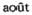

überhaupt in den Herzogthümern Schleswig und Holstein.St.Petersburg 1861）。——275。
überhaupt in den Herzogthümern Schleswig und Holstein.St.Petersburg 1861）。——275。其他作者的著作 (1)
A
［阿巴思诺特，约·］《当前粮食价格和农场面积相互关系的研究》，一个租地农场主著，1773年伦敦版（［Arbuthnot，J.］：An inquiry into the connection between the present price of provisions，and the size of farms.With remarks on population as affected thereby.To which are added，proposals for preventing future scarcity.By a farmer.London 1773）。——357、379、381、830、836。
阿庇安《罗马内战》（Appian：Bürgerkriege）——见阿庇安（亚历山大里亚的）《罗马史》。
阿庇安（亚历山大里亚的）《罗马史》，裴·L.J.迪勒尼乌斯译，1830年斯图加特版第7卷（［Appianus］Appian von Alexandrien：Geschichtenvon F.L.J.Dillenius.Bd.7.Stuttgart 1830）。——835。
阿丁顿，斯·《赞成和反对圈地的论据的探讨》1772年考文垂第2版。引自理·普赖斯《评继承支付》1803年伦敦第6版第2卷（Addington，S.：An inquiry into the reasons for and against inclosing open-fields.2.ed.Coventry 1772. Nach：R.Price：Observations on reversionary payments.6.ed.Vol.2.London 1803）。——834。
阿什利，［安·］《工厂十小时工作日法案。1844年3月15日星期五在下院的演说》1844年伦敦版（Ashley，［A.］：Ten hours’factory bill.The speech...in the House of Commons，on Friday，March 15th，1844.London 1844）。——463、476。
阿泰纳奥斯《哲人宴》（Athenaeus：Deipnosophistae）。——121、156。
艾金，约·《曼彻斯特市外30—40英里范围内的郊区》1795年伦敦版（Aikin，J.：A description of the country from thirty to forty miles round Manchester. London 1795）。——685、686、860、869。
［安德森，亚·］《商业起源古今编年史》（两卷集）1764年伦敦版（［Anderson，A.］：An historical and chronological deduction of the origin of commerce，from the earliest accounts to the present time.Containing，an history of the great commercial interests of the British Empire.With an app.In 2 vol.London 1764）。——855、870。
安德森，詹·《论激励民族创业精神的手段，主要是为了发展苏格兰的农业、商业、工业和渔业。1775年给一位朋友的几封信》1777年爱丁堡版（Anderson，J.：Observations on the means of exciting a spirit of national industry；chiefly intended to promote the agriculture，commerce，manufactures，and fisheries of Scotland.In a set.of letters to a friend.Written in the year 1775.Edinburgh 1777）。——646、834、838。
安德森，詹·《蜜蜂，或文学周报》1791年爱丁堡版第3卷（Anderson，J.：The bee，or literary weekly intelligencer.Vol.3.Edinburgh 1791）。——713。
奥姆斯特德，弗·罗·《沿海各蓄奴州旅行记》1856年纽约—伦敦版。引自约· 埃·凯尔恩斯《奴隶劳力：它的性质、经过及其可能的前途》1862年伦敦版（Olmsted，F.L.：A journey in the seaboard slave states.New York，London 1856.Nach：J.E.Cairnes：The slave power：its character，career，＆probable designs：being an attempt to explain the real issues involved in the American contest.London 1862）。——229。
奥普戴克，乔·《论政治经济学》1851年纽约版（Opdyke，G.：A treatise on political economy.New York 1851）。——191。
奥日埃，马·《论公共信用及其古今史》1842年巴黎版（Augier，M.：Du crédit public et de son histoire depuis les temps anciens jusqu’à nos jours.Paris 1842）。——871。
奥特斯，贾·《国民经济学》（六卷集），1774年威尼斯版，载于［彼·库斯托第编］《意大利政治经济学名家文集·现代部分》1804年米兰版第21卷（Ortes，G.：Della economia nazionale.Libri 6.1774Veneziano.In：Scrittori classici italiani.di economia politica.［Hrsg.P.Custodi.］Parte moderna.T. 21.Milano 1804）。——744。
奥特韦，约·哈·《1860年春季开庭期郡法庭（贝尔法斯特）庭长约·哈·奥特韦的判决》，载于《工厂视察员报告。截至1860年4月30日为止的半年》1860年伦敦版（Otway，J.H.：Judgment of J.H.Otway，Chairman of County Sessions.-Belfast.Hilary Sessions，1860.In：Reports of the inspectors of factories...for the half year ending 30th April 1860.London 1860）。——320。
B
巴顿，约·《论影响社会上劳动阶级状况的环境》1817年伦敦版（Barton，J.：Observations on the circumstances which influence the condition of the labouring classes of society.London 1817）。——728、776。
巴尔本，尼·《新币轻铸论。答洛克先生关于提高货币价值的意见》1696年伦敦版（Barbon，N.：A discourse concerning coining the new money lighter.In answer to Mr.Lock’s considerations about raising the value of money.London 1696）。——48—50、152、168、169。
拜比吉，查·《论机器和工厂的节约》1832年伦敦第1版（Babbage，Ch.：On the economy of machinery and manufactures.1.ed.London 1832）。——401、432、449、466。
拜比吉，查·《论机器和工厂的节约》1832年伦敦增订第2版（Babbage，Ch.：On the economy of machinery and manufactures.2.ed.，enl.London 1832）。——403。
拜比吉，查·《论机器和工厂的节约》，爱·比奥译自英文第3版，1833年巴黎版（Babbage，Ch.：Traité sur l’économie des machines et des manufactures.Trad. de l’anglais sur la 3.éd.，par.Biot.Paris 1833）。——403、466。
［拜耳斯，约·巴·］《自由贸易的诡辩和通俗政治经济学》，一个律师著，1850年伦敦增订第7版（［Byles，J.B.］：Sophisms of free-trade and popular political economy examined.By a barrister.7.ed.，with.corr.and add.London 1850）。——313、848。
贝恩斯，［约·］《棉花贸易。对布莱克本文学、科学、机械学学会会员所作的有关这个问题的两次演讲》1857年布莱克本—伦敦版。引自《工厂视察员报告。截至1858年10月31日为止的半年》1858年伦敦版（Baynes，［J.］：The cotton trade.Two lectures on the above subject，delivered before the members of the Blackburn Literary，Scientific and Mechanics’ Institution.Blackburn，London 1857.Nach：Reports of the inspectors of factories...for the half year ending 31thOctober 1858.London 1858）。——446。
贝卡里亚，切·《社会经济原理》，载于［彼·库斯托第编］《意大利政治经济学名家文集·现代部分》1804年米兰版第11卷（Beccaria，C.：Elementi di economia pubblica.In：Scrittori classici italiani di economia politica.［Hrsg.P. Custodi.］Parte moderna.T.11.Milano 1804）。——422。
贝克莱，乔·《提问者。几个提交公众讨论的问题》1750年伦敦版（Berkley ［vielm.Berkeley］，G.：The querist，containing several queries，proposed to the consideration of the public.London 1750）。——389、410。
贝勒斯，约·《关于创办一所一切有用的手工业和农业的劳动学院的建议》1696年伦敦版（Bellers，J.：Proposals for raising a colledge of industry of all useful trades and husbandry，with profit for the rich，a plentiful living for the poor，and a good education for youth.London 1696）。——162、378、492、562、709。
贝勒斯，约·《论贫民、工业、贸易、殖民地和道德堕落》1699年伦敦版（Bellers，J.：Essays about the poor，manufactures，trade，plantations，and immorality. London 1699.）。——154、170、552。
［贝利，赛·］《对价值的本质、尺度和原因的批判研究，主要是论李嘉图先生及其信徒的著作》，《略论意见的形成和发表》一书的作者著，1825年伦敦版（［Bailey，S.］：A critical dissertation on the nature，measures，and causes of value，chiefly in reference to the writings of Mr.Ricardo and his followers.By the author of essays on the formation and publication of opinions.London 1825）。——78、101、614。
［贝利，赛·］《货币及其价值的变动，这种变动对国家工业和金钱契约的影响；并载有关于股份银行的附录》1837年伦敦版（［Bailey，S.］：Money and its vicissitudes in value；as they affect national industry and pecuniary contracts：with a postscript on joint-stock banks.London 1837）。——64、704。
比多，J.N.《大生产工具引起的工业技术和商业中的垄断》第2册《生产和销售的垄断》1828年巴黎版（Bidaut，J.N.：Du monopole qui s’établit dans les arts industriels et le commerce，au moyen des grands appareils de fabrication.Livr.2： Du monopole de la fabrication et de la vente.Paris 1828）。——372。
比泽，弗·《亚里士多德的哲学，及其内在联系，着重论述他著作中的哲学用语》1842年柏林版第2卷（Biese，F.：Die Philosophie des Aristoteles，in ihrem inneren Zusammenhange，mit besonderer Berücksichtigung des philosophischen Sprachgebrauchs，aus dessen Schriften entwickelt.Bd.2：Die besonderen Wissenschaften.Berlin 1842）。——469。
毕舍，菲·约·本·/皮·塞·卢［-拉维涅］《法国革命议会史，或1789—1815年的国民会议日志》（四十卷集）1834年巴黎版第10卷（Buchez，P.-J.-B./ P.-C.Roux［-Lavergne］：Histoire parlementaire de la RévolutionJournal des Assemblées Nationales，depuis 1789 jusqu’en 1815.T.1—40.T. 10.Paris 1834）。——851。
边沁，耶·《惩罚和奖赏的理论》（两卷集），埃·杜蒙编，1826年巴黎第3版第2卷（Bentham，J.：Théorie des peines et des récompenses，ouvrage extrait des manuscrits.Par.Dumont.3.éd.T.1.2.T.2.Paris 1826）。——704。
波斯尔思韦特，玛·《阐明并增进大不列颠商业利益》（两卷集）1759年伦敦第2版（Postlethwayt，M.：Great-Britain’s commercial interest explained and improved.2.ed.Vol.1.2.London 1759）。——316。
波斯尔思韦特，玛·《工商业大辞典》。引自［约·肯宁安］《论手工业和商业》1770年伦敦版（Postlethwayt，M.：The universal dictionary of trade and commerce：with large additions and improvements.Nach：［J.Cunningham］：An essay on trade and commerce.London 1770）。——316—317。
波特尔，阿·《政治经济学：它的对象、应用和原理。以美国人的生活状况来加以说明》1841年纽约版（Potter，A.：Political economy：its objects，uses，and principles：considered with reference to the condition of the American people. New-York 1841）。——655。
波特尔，埃·《棉花区与移民》，载于1863年3月24日《泰晤士报》（伦敦）第24514号（Potter，E.：The cotton districts and emigration.In：The Times. London.Nr，24514，24.1863）。——341、662。
伯克，埃·《关于贫困的意见和详情，原系1795年11月向最尊敬的威廉·皮特提出的报告》1800年伦敦版（Burke，E.：Thoughts and details on scarcity， originally presented to the Right Hon.William Pitt，in the month of November，1795.London 1800）。——240、272、375、871。
伯克，埃·《尊敬的埃德蒙·伯克就贝德福德公爵和罗德戴尔伯爵于本届议会常会开会时在上院对他本人和他的养老金问题进行的责难而给高贵勋爵的信》1796年伦敦版（Burke，E.：A letter from the Right Honourable Edmund Burke to a Noble Lord，on the attacks made upon him and his pension，in the House of Lords，by the Duke of Bedford and the Earl of Lauderdale，early in the present session of Parliament.London 1796）。——832。
柏拉图《理想国》，载于拜特尔、奥雷利、温克尔曼编《柏拉图全集》1840年苏黎世版第13卷（Plato：De republica.In：Opera quae feruntur omnia.Recogn. Georgius Baiterus，Caspar Orellius，Augustus Guilielmus Winckelmannus.Vol. 13.Turici 1840）。——422、423。
博克斯霍恩，马·聚·《政治原理》，载于博克斯霍恩《各种政治论文》1663年阿姆斯特丹版。引自约·贝克曼《发明史文集》1786年莱比锡修订第2版第1卷（［Boxhorn］Boxhornius，M.Z.：Institutionum politicarum.In：Boxhornius： Varii tractatus politici.Amstelodami 1663，Nach：J.Beckmann：zur Geschichte der Erfindungen.2.，etwas verb.Ausg.Bd.1.Leipzig 1786）。——493。
布阿吉尔贝尔，［皮·］《论财富、货币和赋税的性质》，载于欧·德尔编《18世纪的财政经济学家》1843年巴黎版（Boisguillebert，［P.］：Dissertation sur la nature des richesses，de l’argent et des tributs.In：financiers duⅩⅧe siècle.Préc.de notices historiques sur chaque auteur，et accomp.de comm.et de notes explicatives，par E.Daire.Paris 1843［Collection des principaux économistes.T.1.］）。——165。
布坎南，大·《大不列颠赋税和商业政策的研究》1844年爱丁堡版（Buchanan，D.：Inquiry into the taxation and commercial policy of Great Britain；with observations on the principles of currency，and of exchangeable value，Edinburgh 1844）。——149。
布坎南，大·《论斯密博士的〈国民财富的性质和原因的研究〉的内容》1814年爱丁堡版（Buchanan，D.：Observations on the subjects treated of in Dr.Smith’s Inquiry into the nature and causes of the wealth of nations.Edinburgh 1814）。——838。
布坎南，大·《为斯密〈国富论〉所加的注释和附录》——见斯密，亚·《国民财富的性质和原因的研究》（三卷集）1814年爱丁堡版。
布莱基，罗·《古今政治文献史》（两卷集）1855年伦敦版第2卷（Blakey，R.：The history of political literature from the earliest times.Vol.1.2.Vol.2. London 1855）。——829。
布朗基，［日·阿·］《工业经济学教程》，阿·布莱斯编注，1838—1839年巴黎版（Blanqui，［J.A.］：Cours d’économie industrielle.Recueilli et ann.par Ad. Blaise.Paris 1838—1839）。——391。
布朗基，［日·阿·］《1848年法国的工人阶级》。引自《工厂视察员报告。截至1855年10月31日为止的半年》1856年伦敦版（Blanqui，［J.A.］：Des classes ouvrières en France，pendant l’année 1848.Nach：Reports of the inspectors of factories.for the half year ending 31stOctober 1855.London 1856）。——319。［布鲁克纳，约·］《动物界论》1767年莱顿版（［Bruckner，J.］：Théorie du système animal.Leide 1767）。——712。
布鲁姆，亨·《关于欧洲列强殖民政策的研究》（两卷集）1803年爱丁堡版第2卷（Brougham，H.：An inquiry into the colonial policy of the European powers.In 2 vol.Vol.2.Edinburgh 1803）。——870。
［布伦坦诺，路·］《卡尔·马克思是怎样辩护的。第1部分》，载于1872年7月4日《协和》杂志（柏林）第2年卷第27期（［Brentano，L.］：Wie Karl Marx sich vertheidigt.Ⅰ.In：Concordia.Berlin.Jg.2.Nr.27，4.Juli 1872.）。——41—42。
［布伦坦诺，路·］《卡尔·马克思是怎样辩护的。第2部分》，载于1872年7月11日《协和》杂志（柏林）第2年卷第28期［Brentano，L.］：Wie Karl Marx sich vertheidigt.Ⅱ.In：Concordia.Berlin.Jg.2.Nr.28，11.Juli 1872）。——41—42。
［布伦坦诺，路·］《卡尔·马克思是怎样引证的》，载于1872年3月7日《协和》杂志（柏林）第2年卷第10期（［Brentano，L.］：Wie Karl Marx citirt.In： Concordia.Berlin.Jg.2.Nr.10，7.1872）。——37—38。
布罗德赫斯特，约·《政治经济学》1842年伦敦版（Broadhurst，J.：Political economy.London 1842）。——70。
布洛克，莫·《德国的社会主义理论家》，摘自1872年《经济学家杂志》7月号和8月号，1872年巴黎版（Block，M.：Les théoriciens du socialisme en Allemagne. Extrait du Journal des〈Numéros de juillet et d1872〉.Paris 1872）。——19。
布瓦洛，埃·《巴黎的技艺和手工业的规章，订于13世纪，并称为手工业手册》1837年巴黎版（Boileau，：Règlements sur les arts et métiers de Paris，rédigés auⅩⅢe siècle，et connus sous le nom du Livre des métiers.Avec des notes et une introd.par G.B.Depping.Paris 1837）。——559。
C
查默斯，托·《论政治经济学同社会的道德状况和道德远景的关系》1832年格拉斯哥第2版（Chalmers，Th.：On political economy in connexion with the moral state and moral prospects of society.2.ed.Glasgow 1832）。——179。
［柴尔德，乔·］《论贸易，特别是东印度的贸易》1689年伦敦版（［Child，J.］：A discourse concerning trade，and that in particular of the East-Indies.London 1689）。——109。
车尔尼雪夫斯基，尼·［加·］《穆勒政治经济学概述》1870年日内瓦—巴勒版и з п о л и т и ч е с к о й з к о н о м и и〈 п о М и л л ю 〉. И з д . М и х а и л а Э л п и д и н а и к о м п а н и и .G en ève ，1870.（С о ч и н е н и я.Т. 4.）［In derBibliothek von Marx.］）。——17。
D
达尔文，查·《根据自然选择即在生存斗争中适者保存的物种起源》，译自英文第3版，附译者H.G.布龙的注释，1863年斯图加特增订第2版（Darwin， Entstehung der Arten im Thier- und Pflanzen-Reich durch natürliche Züchtung，oder Erhaltung der vervollkommneten Rassen im Kampfe um’s Daseyn.Nach der 3.engl.Aufl.aus dem Engl.übers.und mit Anm. vers.von H.G.Bronn.2.，verb.und sehr verm.Aufl.Stuttgart 1863）。——396。
达尔文，查·《物种起源》。——见达尔文，查·《根据自然选择即在生存斗争中适者保存的物种起源》。
达菲，加·《维多利亚土地法指南》1862年伦敦版（Duffy，G.：Guide to the land law of Victoria.London 1862）。——886。
德·昆西，托·《政治经济学逻辑》1844年爱丁堡—伦敦版（De Quincey，Th.：The logic of political economy.Edinburgh，London 1844）。——455。
德斯杜特·德·特拉西，［安·路·克·］《意识形态原理》第4、5部分《论意志及其作用》1826年巴黎版（Destutt de Tracy，［A.L.C.］：d’idéologie. Pt.4.5.Traité de la volonté et de ses effets.Paris 1826）。——183、190、378、380、746。
德斯杜特·德·特拉西，［安·路·克·］《政治经济学概论》1823年巴黎版（Destutt de Tracy，［A.L.C.］：Traité d’économie politique.Paris 1823）。——183、746。
邓宁，托·约·《工联和罢工》1860年伦敦版（Dunning，Th.J.：Trades’Unions and strikes：their philosophy and intention.London 1860）。——634、637—638、871。
狄奥多鲁斯（西西里的）《史学丛书》（十九卷集），尤·弗·武尔姆译，1827—1829年斯图加特版第1、3卷（［Diodorus］Diodor von Sicilien：Historische Bibliothek.von J.F.Wurm.Bd.1—19.Bd.1.3.Stuttgart 1827— 1829）。——167、273、394、425、587。
［迪尔克，查·温·］《根据政治经济学基本原理得出的国民困难的原因及其解决办法。给约翰·罗素勋爵的一封信》1821年伦敦版（［Dilke，Ch.W.］：The source and remedy of the national difficulties，deduced from principles of politicale economy，in a lette to Lord John Russell.London 1821）。——678。
［笛福，丹·］《论公共信贷》1710年伦敦版（［Defoe，D.］：An essay upon publick credit：being an enquiry...London 1710）。——164。
笛卡儿，勒·《论人类》1664年莱顿版（Descartes，R.：De homine.Leyden 1664）。——448。
笛卡儿，勒·《正确运用理性与在科学中寻求真理的方法论》1668年巴黎版（Descartes，R.：Discours de la méthode pour bien conduire sa raison，et chercher la vérité dans les sciences.Paris 1668）。——448。
杜尔哥，［安·罗·雅·］《关于财富的形成和分配的考察》，载于欧·德尔新编《杜尔哥全集》1844年巴黎版第1卷（Turgot，［A.R.J.］：Réflexions sur la formation et la distribution des richesses.In：（Euvres.Nouv.éd.，par E.Daire. T.1.Paris 1844.［Collection des principaux économistes.T.3］）。——210、365、611。
杜克佩西奥，爱·《比利时劳动阶级的经济预算。生活资料、工资、人口》1855年布鲁塞尔版（Ducpétiaux，：Budgets économiques des classes ouvrières en Belgique.Subsistances，salaires，population.Bruxelles 1855）。——772、774。
杜能，约·亨·冯·《孤立国家的农业和国民经济》1863年罗斯托克版第2卷第2部分（Thünen，J.H.von：Der isolirte Staat in Beziehung auf Landwirthschaft undonomie.Th.2.Abth.2.Rostock 1863）。——717。
《对货币利息，特别是公债利息的一些看法》［1738年］伦敦版（Some thoughts on the interest of money in general，and particularly in the publick funds.London ［1738］）。——52、61。
《对擅自弃职离乡工人的惩治》［1360年］。引自弗·莫·伊登《贫民的状况》1797年伦敦版第1卷（The punishment of labourers，＆c.departing from their service into another county.［1360.］Nach：F.M.Eden：The state of the poor. Vol.1.London 1797）。——848。
E
恩索尔，乔·《各国人口的研究，驳马尔萨斯先生的〈人口论〉》1818年伦敦版（Ensor，G.：An inquiry concerning the population of nations：containing a refutation of Mr.Malthus’s Essay on population.London 1818）。——838。
F
范德林特，杰·《货币万能，或试论怎样才能使各阶层人民都有足够的货币》1734年伦敦版（Vanderlint，J.：Money answers all things：or，an essay to make money sufficiently plentiful amongst all ranks of people，and increase our foreign and domestick trade.London 1734）。——146、154、169、316、364、384。
菲尔登，约·《工厂制度的祸害，或略述工厂中残酷现象的根源》［1836年］伦敦版（Fielden，J.：The curse of the factory system；or a short account of the origin of factory cruelties.London［1836］）。——464、475、869。
菲瑟灵，西·《实用国民经济手册》（共三部）1860—1862年阿姆斯特丹版（Vissering，S.：Handboek van praktische staathuishoudkunde.Delen 1—3. Amsterdam 1860—1862）。——577。
费里埃，弗·路·奥·《论政府和贸易的相互关系》1805年巴黎版（Ferrier，F. L.A.：Du gouvernement considéré dans ses rapports avec le commerce.Paris 1805）。——76。
丰特雷，安·路·《一般大城市特别是里昂城工人的生理卫生和精神卫生》1858年巴黎版。引自《就面包工人的申诉向女王陛下内务大臣的报告》1862年伦敦版（Fonteret，A.L.：Hygiène physique et morale de l’ouvrier dans les grandes villes en général et dans la ville de Lyon en particulier.Paris 1858.Nach：Report addressed to Her Majesty’s Principal Secretary of State for the Home Department，relative to the grievances complained of by the journeymen bakers. London 1862）。——420。
弗格森，亚·《论市民社会史》1750年爱丁堡版（Ferguson，A.：An essay on the history of civil society.Edinburgh 1750）。——410。
弗格森，亚·《论市民社会史》1767年爱丁堡版（Ferguson，A.：An essay on the history of civil society.Edinburgh 1767）。——418、420。
［弗利特伍德，威·］《行情表，或六百年来英国的货币、谷物和其他商品的价格》1707年伦敦版（［Fleetwood，W.］：Chronicon preciosum：or，an account of English money，the price of corn，and other commodities，for the last 600 years. London 1707）。——314。
弗利特伍德，［威·］《行情表，或六百年来英国的金银货币、谷物和其他商品的价格》1745年伦敦版（Fleetwood，［W.］：Chronicon preciosum：or，an account of English gold and silver money；the price of corn and other commodities；and of stipends，salaries，wages，jointures，portions，day-labour，etc.in England，for six hundred years last past.London 1745）。——314。
福蒂斯丘，约·《谈谈英国法律的优越性》［1537年伦敦版］（Fortescue，J.：De laudibus legum Angliae.［London 1537］）。——825。
［福尔邦奈，弗·韦·杜·德·］《商业学入门》1766年莱顿新版第2卷（［Forbonnais，F.V.D.de］：du commerce.Nouv.é d.Pt.2.Leyde 1766）。——110。
福塞特，亨·《英国工人的经济状况》1865年剑桥—伦敦版（Fawcett，H.：The economic position of the British labourer.Cambridge，London 1865）。——642、706、752。
［福斯特，纳·］《论当前粮价昂贵的原因》（两卷集）1767年伦敦版（［Forster，N.］：An enquiry into the causes of the present high price of provisions.Pt.1.2. London 1767）。——316、492、587、833。
富拉顿，约·《论通货的调整。原理的分析，根据这些原理提出在某些固定的范围内限制英格兰银行和全国其他银行机构将来的贷款发行活动》1845年伦敦增订第2版（Fullarton，J.：On the regulation of currencies；being an examination of the principles，on which it is proposed to restrict，within certain fixed limits，the future issues on credit of the Bank of England，and of the other banking establishments throughout the country.2.ed.With corr.and add. London 1845）。——151、165、169。
富兰克林，本·《关于国民财富的有待研究的几个问题》，载于贾·斯帕克斯编《富兰克林全集》1836年波士顿版第2卷（Franklin，B.：Positions to be examined，concerning national wealth.In：The works of Franklin.With notes and a life of the author.By J.Sparks.Vol.2.Boston 1836）。——191。
富兰克林，本·《试论纸币的性质和必要性》，载于贾·斯帕克斯编《富兰克林全集》1836年波士顿版第2卷（Franklin，B.：A modest inquiry into the nature and necessity of a paper currency.In：The works of Franklin.With notes and a life of the author.By J.Sparks.Vol.2.Boston 1836）。——65。
G
哥伦布，克·《寄自牙买加的信》（Columbus，Ch.：［Brief aus Jamaika］）。——155。
格莱斯顿，［威·尤·］［《1863年4月16日在下院的演说》］，载于1863年4月17日《晨报》（伦敦）第22418号（Gladstone，［W.E.］：［Rede im House of Commons，16.April 1863.］In：The Morning Advertiser.London.Nr.22418，17.April 1863）。——41。
［格雷，约·］《国民财富基本原理的说明。驳亚当·斯密博士等人的某些错误论点》1797年伦敦版（［Gray，J.］：The essential principles of the wealth of nations，illustrated，in opposition to some false doctrines of Dr.Adam Smith，and others.London 1797）。——187。
［格雷格，罗·海·］《从工人健康和道德影响看工厂问题。“十小时工作日法案”对英国及其他国家工业的影响》1837年伦敦版。引自《工厂视察员报告。截至1848年10月31日为止的半年》1849年伦敦版（［Greg，R.H.］：The factory question，considered in relation to its effects on the health and morals of those employed in factories.And the“Ten Hours Bill”，in relation to its effects upon the manufactures of England，and those of foreign countries.London 1837. Nach：Reports of the inspectors of factories...for the half-year ending 31st October 1848.London 1849）。——337。
格雷古瓦，昂·《布鲁塞尔轻罪法庭上的印刷工人》1865年布鲁塞尔版（Gregoir，H.：Les typographes devant le Tribunal correctionnel de Bruxelles.Bruxelles 1865）。——639。
格罗夫，威·罗·《物理力的相互关系》，附《论连续性》，1867年伦敦第5版（Grove，W.R.：The correlation of physical forces.5.ed.Followed by a discourse on continuity.London 1867）。——602。
《各国的工业。工艺、机器和工厂的现况概述》1855年伦敦版第2部分（The industry of nations.A survey of the existing state of arts，machines，and manufactures.Pt.2.London 1855）。——399、442。
《公共经济概论，或论流通手段、农业和工业》，一位初级原理研究者著，1833年卡莱尔版（Public economy concentrated；or，a connected view of currency，agriculture，and manufactures.By an enquirer into first principles.Carlisle 1833）。——456。
《关于济贫税和食物价格高昂给萨福克郡议会议员邦伯里爵士的一封信，建议减税降价》，萨福克一绅士著，1795年伊普斯威奇版（A Letter to Sir T.C. Bunbury，Bart.，one of the Members of Parliament for the County of Suffolk on the poor rates，and the high price of provisions.With some proposals for reducing both.By a Suffolk gentleman.Ipswich 1795）。——830。
H
哈勒，卡·路·冯·《国家学的复兴，或与人为公民状况空想相对立的自然社会状况理论》（六卷集）1816年温特图尔版第1卷（Haller，C.L.von：Restauration der Staats-Wissenschaft oder Theorie des natürlich-geselligen Zustands，derdes künstlichbürgerlichen entgegengesetzt.Bd.1—6. Bd.1.Winterthur 1816）。——448。
哈里斯——见马姆兹伯里伯爵，詹姆斯·哈里斯。
哈里斯，詹·《关于幸福的对话》1741年伦敦版（Harris，J.：A dialogue concerning happiness.London 1741）。——422。
哈里斯，詹·《关于幸福的对话》，载于哈里斯《三篇论文》1772年伦敦修订第3版（Harris，J.：Dialogue concerning happiness.In：Harris：Three treatises.3. ed.，rev.and corr.London 1772）。——422。
哈里逊，威·《英国概述》，载于《编年史》第1、2卷，拉·霍林舍德、威·哈里逊等第一次收集和发行，1587年伦敦版（Harrison，W：The description of England.In：The first and second volumes of Chronicles，first collected and published by R.Holinshed，W·Harrison，and others.London，1587）。——825、845、852。
哈姆，威·《英国的农具和农业机器》1856年不伦瑞克增订第2版（Hamm，W.： Die landwirthschaftlichenund Maschinen Englands.Ein Handbuch der landwirthschaftlichen Mechanik und Maschinenkunde，mit einer Schilderung der britischen Agricultur.2..umgearb.und bed.verm.Aufl.Braunschweig 1856）。——578。
哈索尔，阿·希·《揭穿了的搀假行为，或鉴别搀假食物和药品的通俗指南》1861年伦敦第2版（Hassall，A.H.：Adulterations detected or plain instructions for the discovery of frauds in food and medicine.2.ed.London 1861）。——203、288。
汉森，格·《石勒苏益格—荷尔斯泰因公国农奴制的消灭和地主与农民关系的改变》1861年圣彼得堡版（Hanssen，G.：Die Aufhebung der Leibeigenschaft und die Umgestaltung der gutsherrlich-überhaupt in den Herzogthümern Schleswig und Holstein.St.Petersburg 1861）。——275。
汉特，亨·朱·《关于英格兰某些农业区婴儿死亡率过高的报告》（Hunter，H. J.：Report on the excessive mortality of infants in some rural districts of England）。——458。
豪伊特，威·《殖民和基督教：欧洲人对待所有殖民地人民的通俗历史》1838年伦敦版（Howitt，W.：Colonization and Christianity：a popular history of the treatment of the natives by the Europeans in all their colonies.London 1838）。——861。
赫顿，查·《数学教程》（两卷集）1804年伦敦增订第4版第2卷（Hutton，Ch.：A course of mathematics.4.ed.，enl.and corr.In 2 vol.Vol.2.London 1804）。——428。
赫胥黎，托·亨·《初等生理学讲义》1866年伦敦版（Huxley，Th.H.：Lessons in elementary physiology.London 1866）。——555。
黑格尔，乔·威·弗·《法哲学原理，或自然法和国家学纲要》1840年柏林第2版（《黑格尔全集》第8卷）（Hegel，G.W.F.：Grundlinien der Philosophie des Rechts，oder Naturrecht und Staatswissenschaft im Grundrisse.Hrsg.von Eduard Gans.2.Aufl.Berlin 1840.［Werke.Vollst.Ausg.durch einen Verein von Freunden des Verewigten.Bd.8］）。——58、110、196、421。
黑格尔，乔·威·弗·《逻辑学》（两卷集）第1卷《客观逻辑》第1部《存在论》1833年柏林版（《黑格尔全集》第3卷）（Hegel，G.W.F.：Wissenschaft der Logik.Th.1.2.Th.1：Die objektive Logik.Abth.1：Die Lehre vom Seyn. Hrsg.von Leopold von Henning.Berlin 1833.［Werke.Vollst.Ausg.durch einen Verein von Freunden des Verewigten.Bd.3］）。——358。
黑格尔，乔·威·弗·《哲学全书纲要》第1部《逻辑学》1840年柏林版（《黑格尔全集》第6卷）（H e g e l，G.W.F.：der philosophischen Wissenschaften im Grundrisse.Th.1：Die Logik.Hrsg.von Leopold von Henning.Berlin 1840.［Werke.Vollst.Ausg.durch einen Verein von Freunden des Verewigten.Bd.6］）。——209、303。
华德，约·《维多利亚女王陛下在位初期的特伦特河畔斯托克城》1843年伦敦版。引自《童工调查委员会（1862年）。第1号报告》1863年伦敦版（Ward，J.：The borough of Stoke-upon-Trent，in the commencement of the reign of Her employment commission〈1862〉.First report.London 1863）。——308。
霍布斯，托·《利维坦：或教会国家和市民国家的实质、形式和权力》，载于《霍布斯英文著作选》，威·莫尔斯沃思第一次收集和出版，1839年伦敦版第3卷（Hobbes，Th.：Leviathan：or，the matter，form，and power of a commonwealth，ecclesiastical and civil.In：Hobbes：The English works.Now first coll.and ed.by Sir W.Molesworth.Vol.3.London 1839）。——198。
霍顿，约·《农业和手工业的改进：关于谷物、家禽、煤、啤酒花、羊毛等的宝贵资料汇编》（四卷集）1727—1728年伦敦版（Houghton，J.：Husbandry and trade improv’d：being a collection of many valuable materials relating to corn，cattle，coals，hops，wool etc.Vol.1—4.London 1727—1728）。——492。
［霍恩，乔·］《给法学博士亚当·斯密的一封信，论他的朋友大卫·休谟的生平和哲学》，一位称作基督徒的人著，1784年牛津第4版（［Horne，G.］：A letter to Adam Smith LL.D.on the life，death，and philosophy of his friend David Hume.By one of the people called Christians.4.ed.Oxford 1784）。——713。
［霍吉斯金，托·］《保护劳动反对资本的要求，或资本非生产性的证明。关于当前雇佣工人的团结》，一个工人著，1825年伦敦版（［Hodgskin，Th.］：Labour defended against the claims of capital；or，the unproductiveness of capital proved. With reference to the present combinations amongst journeymen.By a labourer. London 1825）。——411、662。
［霍吉斯金，托·］《财产的自然权利和人为权利的比较》1832年伦敦版（［Hodgskin，Th.］：The natural and artificial right of property contrasted.A ser. of letters，addressed without permission，to H.Brougham.By the author of “Labour defended against the claims of capital”.London 1832）。——860。
霍吉斯金，托·《通俗政治经济学。在伦敦机械学学会的四次演讲》1827年伦敦Most Gracious Majesty Queen Victoria.London 1843.Nach：Children’s—爱丁堡版（Hodgskin，Th.：Popular political economy.Four lectures delivered at the London Mechanics’Institution.London，Edinburgh 1827）。——394、408、615。
霍林舍德，拉·《英国概述》——见哈里逊，威·《英国概述》。
霍纳，伦·《霍纳先生给西尼耳先生的一封信。1837年5月23日于利兹》，载于纳·威·西尼耳《关于工厂法的书信》1837年伦敦版（Horner，L.：Letter from Mr.Horner to Mr.Senior.Leeds，May 23，1837.In：N.W.Senior：Letters on the factory act.London 1837）。——259。
霍纳，伦·《关于修改工厂法以使工厂视察员能够制止目前盛行的非法劳动的建议》，载于《工厂法》，根据下院决定于1859年8月9日刊印（Horner，L.：Suggestions for amending the factory acts to enable the inspectors to prevent illegal working，now become very prevalent.In：Factories regulation acts. Ordered.by the House of Commons，to be printed，9 August 1859.［London 1859］）。——279、341。
霍普金斯，托·《论地租及其对生存资料和人口的影响。兼论影响各国劳动阶级状况的原因》1828年伦敦版（Hopkins，Th.：On rent of land，and its influence on subsistence and population：with observations on the operating causes of the condition of the labouring classes in various countries.London 1828）。——266。
J
吉斯伯恩，托·《论大不列颠社会上层和中层阶级人们的义务》（两卷集）1795年伦敦修订第2版第2卷（Gisborne，Th.：An enquiry into the duties of men in the higher and middle classes of society in Great Britain.2.ed.，corr.In 2 vol. Vol.2.London 1795）。——869。
季别尔，尼·［伊·］《李嘉图的价值和资本理论的最新补充和解释》1871年基辅版 （З и б е р，Н .［И .］：Т е о р и я ц е н н о с т и и к а п и т а л а Д . Р и к а р д о в с в я з и с п о з д н е й ш и м иД о п о л н е н и я м и и р а з я с н е н и я м и . О п ы т к р и т и к о - з к о н о м и ч е с к о г о и с л е д о в а н и я.К и е в 1871.［InderBibliothek von Marx.］）。——19。
加尔涅，热·《译者注释》——见斯密，亚·《国民财富的性质和原因的研究》（五卷集），热·加尔涅的新译本。
［加尔涅，热·］《政治经济学原理概论》1796年巴黎版（［Garnier，G.］：Abrégé élémentaire des principes de l’économie politique.Paris 1796）。——635。
加利阿尼，斐·《货币论》，载于［彼·库斯托第编］《意大利政治经济学名家文集·现代部分》1803年米兰版第3、4卷（Galiani，F.：Della moneta.In：Scrittori classici italiani di economia politica.［Hrsg.P.Custodi.］Parte moderna. T.3.4.Milano 1803）。——91、108、120、179、185、366、741。
加尼耳，沙·《论政治经济学的各种体系及其学说的比较价值和其中最有利于财富增长的学说》（两卷集）1821年巴黎第2版（Ganilh，Ch.：Des systèmes d’économie politique，de la valeur comparative de leurs doctrines，et de celle quila plus favorable aux progrès de la richesse.2.éd.T.1.2.Paris 1821）。——76、202、515。
加尼耳，沙·《政治经济学理论》（两卷集）1815年巴黎版（Ganilh，Ch.：La théorie de l’économie politique，fondée sur les faits résultarts des statistiques de la France et de l’Angleterre.T.1.2.Paris 1815）。——210。
加斯克尔，彼·《英国的工业人口，他们的道德、社会和身体的状况以及使用蒸汽机而引起的变化，包括对儿童劳动的考察》1833年伦敦版（Gaskell，P.：The manufacturing population of England，its moral，social，and physical conditions，and the changes which have arisen from the use of steam machinery；with an examination of infant labour.London 1833）。——501、511。
居利希，古·冯·《关于当代主要商业国家的商业、工业和农业的历史叙述》（五卷集）1830年耶拿版第1、2卷（Gülich，G.von：Geschichtliche Darstellung des Handels，der Gewerbe und des Ackerbaus der bedeutendsten handeltreibenden Staaten unserer Zeit.Bd.1—5.Bd.1.2.Jena 1830）。——15。
居维叶，［若·］《论地球的灾变》，赫弗主编，1863年巴黎版（Cuvier，［G.］：Discours sur les révolutions du globe avec des notes et un appendice d’après les travaux récents de MM.de Humboldt，Flourens，Lyell，Lindley，etc.Réd.par Hoefer.Paris 1863）。——588。
K
卡尔利，乔·里·《注释》——见韦里，彼·《政治经济学研究》。
卡莱尔，托·［《萌芽中的美国伊利亚特》］，载于1863年8月《麦克米伦杂志》（伦敦—剑桥）第8卷第46期（Carlyle，Th.：［The American illiad in a nutshell.］In：Macmillan’s Magazine.London，Cambridge.Vol.8.Nr.46，August 1863）。——296。
卡泽诺夫，约·《马尔萨斯〈政治经济学定义〉注释》——见马尔萨斯，托·罗·《政治经济学定义》。
［卡泽诺夫，约·］《政治经济学大纲。略论财富的生产、分配和消费的规律》1832年伦敦版（［Cazenove，J.］：Outlines of political economy；being a plain and short view of the laws relating to the production，distribution，and consumption of wealth.London 1832）。——231、369、598。
凯尔恩斯，约·埃·《奴隶劳力：它的性质、经过及其可能的前途》1862年伦敦版（Cairnes，J.E.：The slave power：its character，career，＆probable designs：being an attempt to explain the real issues involved in the American contest.London 1862）。——229、308、386。
凯里，亨·查·《国内外的奴隶贸易：这种贸易存在的原因及其消除的办法》1853年费城版（Carey，H.Ch.：The slave trade，domestic and foreign：why it exists，and how it may be extinguished.Philadelphia 1853）。——839、859。
凯里，亨·查·《论工资率：世界劳动人民状况差别的原因的探讨》1835年费城—伦敦版（Carey，H，Ch.：Essay on the rate of wages：with an examination of the causes of the differences in the condition of the labouring population throughout the world.Philadelphia，London 1835）。——648。
凯特勒，阿·《论人和人的能力之发展》，首次译成英文，1842年爱丁堡版（Qué telet，A.：A treatise on man and the development of his faculties.Now first transl.into English.Edinburgh 1842）。——375。
坎伯尔，乔·《现代印度：民政管理制度概述。卷首附当地居民及其制度的某些材料》1852年伦敦版（Campbell，G.：Modern India：a sketch of the system of civil government.To which is prefixed，some account of the natives and native institutions.London 1852）。——414。
康替龙，菲·《关于工商业、货币、金银、银行和外汇的分析。主要选自一位已故的极有才能的绅士的手稿，适应我国商业的目前情况》1759年伦敦版（Cantillon，Ph.：The analysis of trade，commerce，coin，bullion，banks and foreign exchanges.Wherein the true principles of this useful knowledge are fully but briefly laid down and explained，to give a clear idea of their happy consequences to society，when well regulated.Taken chiefly from a manuscript of a very ingenious gentleman［d.i.vermutlich Richard Cantillon］deceas’d，and adapted to the present situation of our trade and commerce.London 1759）。——639。
［康替龙，理·］《试论一般商业的性质》，译自英文，1755年伦敦版（［Cantillon，R.］：Essai sur la nature du commerce en général.Trad.de l’anglois.Londres 1755）。——639。
［康替龙，理·］《试论一般商业的性质》，译自英文，载于《政论集》1756年阿姆斯特丹版第3卷（［Cantillon，R.］：Essai sur la nature du commerce en général. Trad.de l’anglais.In：Discours politiques.T.3.Amsterdam 1756）。——639。
考［夫曼］，伊·［伊·］《卡尔·马克思的政治经济学批判的观点》（［评］《资本论》1872年圣彼得堡版第1卷），载于1872年《欧洲通报》（圣彼得堡）第3卷（К［а у ф м а н］，И .［И .］：Т о ч к аз р е н и яп о л и т и к о — э к о н о м и ч е с к о йк р и т и к и у К а р л а М а р к с а.［Rezensionzu：］К а п и т а л.Т.1 .С п б.1872.In：В е с т н и к Е в р о п ы. С а н к т -п е т е р б у р г ь.1872.T.3）。——20。
柯贝特，托·《个人致富的原因和方法的研究，或贸易和投机原理的解释》1841年伦敦版第1、2部分（Corbet，Th.：An inquiry into the causes and modes of the wealth of individuals；or the principles of trade and speculation explained.Pt.1.2. London 1841）。——176、680。
柯普，海·《现代化学的发展》1873年慕尼黑版（《德国科学史。现代》第10卷）（Kopp，H.：Die Entwickelung der Chemie in der neueren Zeit.München 1873. （Geschichte der Wissenschaften in Deutschland.Neuere Zeit.Bd.10.）。——358。
科贝特，威·《英格兰和爱尔兰的新教“改革”史。说明那次事件怎样使这两国人民的主体的状况贫困和恶化。给一切明智的和公正的英国人的信》1824年伦敦版（Cobbett，W.：A history of the Protestant“Reformation”，in England and Ireland.Showing how that event has impoverished and degraded the main body of the people in those countries.In a ser.of letters，addressed to all sensible and just Englishmen.London 1824）。——829。
科尔邦，昂·《论职业教育》1860年巴黎第2版（Corbon，A.：De l’enseignement professionnel.2.éd.Paris 1860）。——561。
科兰，［让·吉·］《政治经济学。革命及所谓社会主义乌托邦的起源》（三卷集）1856—1857年巴黎版第1、3卷（Colins，J.G.：L’économie politique.Source des révolutions et des utopies prétendues socialistes.T.1—3.T.1.3.Paris 1856—1857）。——709、798、885。
［克莱门特，西·］《论货币、贸易、汇兑的相互关系的一般概念》，一个商人著，1695年伦敦版（［Clement，S.］：A discourse of general notions of money，trade，and exchanges，as they stand in relation each to other.By a merchant.London 1695）。——109。
［肯宁安，约·］《论赋税。赋税对我国工厂中的劳动价格的影响。给一位朋友的一封信》1765年伦敦版（［Cunningham，J.］：Considerations on taxes，as they are supposed to affect the price of labour in our manufacturies.In a letter to a friend.London 1765）。——316。
［肯宁安，约·］《论手工业和商业。兼评赋税对我国工厂中的劳动价格的影响》1770年伦敦版（Cunningham，J.：An essay on trade and commerce：containing observations on taxes，as they are supposed to affect the price of labour in our manufactories：together with some interesting reflections on the importance of our trade to America.London 1770）。——268、270、316—318、625、692、693、710、733、844。
肯特，纳·《奉告土地所有者先生们》1776年伦敦版（Kent，N.：Hints to gentlemen of landed property.London 1776）。——834。
孔德，沙·《立法论，或谈谈使人民繁荣、衰落或停滞不前的一般规律》1837年布鲁塞尔修订第3版（Comte，Ch.：Traité de législation ou exposition des lois générales，suivant lesquelles les peuples prospèrent，dépérissent，ou restent stationnaires.3.éd.，rev.et corr.Bruxelles 1837）。——861。
孔狄亚克，［埃·博·德·］《商业和政府》，载于《政治经济学文选》，附欧·德尔和古·德·莫利纳里的注释，1847年巴黎版第1卷（Condillac，［ .B.de］：Le commerce et le gouvernement.In：Mélanges d’économie politique.Préc.de notices historiques sur chaque auteur，et accomp.de comm.et de notes explicatives，par E.Daire et G.de Molinari.Pt.1.Paris 1847.T.14）。——185。
库尔塞尔-塞讷伊，让·古·《工商企业、农业企业的理论和实践概论，或业务手册》1857年巴黎增订第2版（Courcelle-Seneuil，J.G.：Traité théorique et pratique，des entreprises industrielles,commerciales＆agricoles ou manuel des affaires.2.éd.，rev.et augm.，Paris 1857）。——269、690。
魁奈，弗·《关于商业和手工业者劳动的问答》，载于《重农学派》，附欧·德尔的绪论和评注，1846年巴黎版第1部（Quesnay，F.：Dialogues sur le commerce et sur les travaux des artisans.In：Physiocrates.Quesnay，Dupont de Nemours，Mercier de la Rivière，L’Abbé Baudeau，Le Trosne，avec une introd.sur la doctrine des physiocrates，des comm.et des notices historiques，par E.Daire.Pt.1.Paris 1846）。——130、372。
魁奈，弗·《经济表分析》，载于《重农学派》，附欧·德尔的绪论和评注，1846年巴黎版第1部（Quesnay，F.：Analyse du tableau économique.In：Physiocrates. Quesnay，Dupont de Nemours，Mercier de la Rivière，L’Abbé Baudeau，Le Trosne，avec une introd.sur la doctrine des physiocrates，des comm.et des notices historiques，par E.Daire.Pt.1.Paris 1846）。——682。
L
拉博尔德，亚·德·《论有利于社会一切方面的协同精神》1818年巴黎版（Laborde，A.de：De l’esprit d’association dans tous les intérêts de la communauté，ou essai sur le complément du bien-être et de la richesse en France par le complément des institutions.Paris 1818）。——610。
拉弗尔斯，托·斯·《爪哇史》（两卷集）1817年伦敦版（Raffles，Th.S.：The history of Java.With a map and plates.In 2 vol.London 1817）。——415、862。
拉马志尼，贝·《论手工业者的疾病》1700年摩地那版。引自《就面包工人的申诉向女王陛下内务大臣的报告》1862年伦敦版（Ramazzini，B.：De morbis artificum diatriba.Mutinae 1700.Nach：Report addressed to Her Majesty’s Principal Secretary of State for the Home Department，relative to the grievances complained of by the journeymen bakers.London 1862）。——420。
拉马志尼，贝·《论手工业者的疾病》，译自拉丁文，1777年巴黎版（Ramazzini，B.：Essai sur les maladies des artisans.Trad.du latin.Paris 1777）。——420。
拉马志尼，贝·《论手工业者的疾病》，载于《医学百科全书》1841年巴黎版。引自《就面包工人的申诉向女王陛下内务大臣的报告》1862年伦敦版（Ramazzini，B.：Essai sur les maladies des artisans.In：Encyclopédie des sciences médicales；ou traité général，méthodique et complet des diverses branches de l’art du guérir.7.div.Auteurs classiques.Paris 1841.Nach：Report addressed to Her Majesty’s Principal Secretary of State for the Home Department，relative to the grievances complained of by the journeymen bakers.London 1862）。——420。
拉姆赛，乔·《论财富的分配》1836年爱丁堡—伦敦版（Ramsay，G.：An essay on the distribution of wealth.Edinburgh，London 1836）。——188、192、585、655、728。
拉萨尔，斐·《巴师夏-舒尔采-德里奇先生，经济学上的尤里安，或者：资本和劳动》1864年柏林版（Lassalle，F.：Herr Bastiat-Schulze von Delitzsch，derJulian，oder：Capital und Arbeit.Berlin 1864）。——7。
拉萨尔，斐·《爱非斯的晦涩哲人赫拉克利特的哲学》（两卷集）1858年柏林版第1卷（Lassalle，F.：Die Philosophie Herakleitos des Dunklen von Ephesos.Nach einer neuen Sammlung seiner Bruchstücke und der Zeugnisse der Alten dargestellt.Bd.1.2.Bd.1.Berlin 1858）。——126。
莱特，托·《论小农场垄断的简短的公开演说》1795年伦敦版（Wright，Th.：A short address to the public on the monopoly of small farms，a great cause of the present scarcity and dearness of provisions.With the plan of an institution to remedy the evil：and for the purpose of increasing small farms throughout the Kingdom.London 1795）。——833。
莱维，莱·《论鹿林和高地农业对食物供应的关系》，载于1866年3月23日《技艺协会杂志》（伦敦）第15卷（Levi，L.：On deer forests and Highland agriculture in relation to the supply of food.In：The Journal of the Society of Arts，and of the Institutions in Union.London.Vol.15.23.1866）。——841。
莱文斯顿，皮·《论公债制度及其影响》1824年伦敦版（Ravenstone，P.：Thoughts on the funding system，and its effects.London 1824）。——494、585。
赖希，爱·《论人类的退化，退化的原因和防治办法》1868年埃朗根版（Reich，E.：Ueber die Entartung des Menschen，ihre Ursachen und Verhütung.Erlangen 1868）。——420。
［兰盖，西·尼·昂·］《民法论，或社会的基本原理》1767年伦敦版第1、2卷（［Linguet，S.N.H.］：Théorie des loix civiles，ou principes fondamentaux de la société.T.1.2.Londres 1767）。——270、388。
兰格，赛·《国家的贫困，贫困的原因及其防止办法》1844年伦敦版（Laing，S.：National distress；its causes and remedies.London 1844）。——231、741、758、777。
朗切洛蒂，塞·《现代——并不逊于过去思想的思想》1636年威尼斯版第2部。引自约·贝克曼《发明史文集》1786年莱比锡修订第2版第1卷（Lancellotti，S.：L’hoggidi，overo gl’ingegni non inferiori a’passati.Pt.2.Venetia 1636.Nach： J.Beckmann：zur Geschichte der Erfindungen.2.，etwas verb.Ausg. Bd.1.Leipzig 1786）。——492。
勒特罗纳，吉·弗·《就价值、流通、工业、国内外贸易论社会利益》（1777年），载于《重农学派》，附欧·德尔的绪论和评注，1846年巴黎版第2部（LeTrosne，G.F.：De l’intérêt social par rapport à la valeur，à la circulation，à l’industrie et au commerce intérieur et extérieur.1777.In：Physiocrates.Quesnay，Dupont de Nemours，Mercier de la Rivière，L’Abbé Baudeau，Le Trosne，avec une introd.sur la doctrine des physiocrates，des comm.et des notices historiques，par E.Daire.Pt. 2.Paris 1846）。——49、52、110、122、133、138、142、169、184、185、188、190、244。
雷尼奥，埃·《多瑙河两公国政治社会史》1855年巴黎版（Regnault.：Histoire politique et sociale des principautés danubiennes.Paris 1855）。——276。
李比希，尤·《化学在农业和生理学中的应用》（两卷集）1862年不伦瑞克第7版第1卷（Liebig，J.：Die Chemie in ihrer Anwendung auf Agricultur und Physiologie.7.Aufl.In 2 Th.Th.1.Braunschweig 1862）。——277、580、661。
李比希，尤·《农业的理论与实践》1856年不伦瑞克版（Liebig，J.：Ueber Theorie und Praxis in der Landwirthschaft.Braunschweig 1856）。——381。
李嘉图，大·《政治经济学和赋税原理》1821年伦敦第3版（Ricardo，D.：On the principles of political economy，and taxation.3.ed.London 1821）。——98、194、219、265、445、451、453、495、497、504、661、680、728。
里德，乔·《面包业的历史》1848年伦敦版。引自《就面包工人的申诉向女王陛下内务大臣的报告》1862年伦敦版（Read，G.：A brief history of the bread baking trade，from the earliest period to the present time.London 1848.Nach：Report addressed to Her Majesty’s Principal Secretary of State for the Home Department，relative to the grievances complained of by the journeymen bakers. London 1862）。——290、291。
理查森，［本·］《劳动与过度劳动》，载于1863年7月18日《社会科学评论》第2卷第58号（Richardson，［B.］：Work and overwork.In：The Social Science Review.London.Vol.2.Nr.58，18.Juli 1863）。——295、297。
卢［-拉维涅］，皮·塞·——见毕舍，菲·约·本·/皮·塞·卢［-拉维涅］《法国革命议会史》。
卢梭，让·雅·《论政治经济学》1760年日内瓦新版（Rousseau，J.J.：Discours sur l’économie politique.Nouv.éd.Genève 1760）。——856。
鲁瓦尔·德卡尔，皮·玛·《论伪造圣物》1856年巴黎版（Rouard de Card，P. M.：De la falsification des substances sacramentelles.Paris 1856）。——289。
路德，马·《给牧师们的谕示：讲道时要反对高利贷》1540年维滕贝格版（Luther，M.：An die Pfarrherrn wider den Wucher zu predigen.Vermanung. Wittenberg 1540）。——159、224、684。
《论促进机械工业发展的必要性》1690年伦敦版（A discourse of the necessity of encouraging mechanick industry.London 1690）。——315。
《论工会》1834年伦敦新版（On combinations of trades.New ed.London 1834）。——643。
《论谷物法》1815年伦敦版（Considerations upon the Corn Bill，London 1815）。——641。
《论国民政治经济学，或论各国间的交往对各国财富的影响》1821年伦敦版（An essay on the political economy of nations：or，a view of the intercourse of countries，as influencing their wealth.London 1821）。——233、356。
《论马尔萨斯先生近来提倡的关于需求的性质和消费的必要性的原理，从这一原理所得的结论是：税收和供养非生产的消费者可以导致财富的增长》1821年伦敦版（An inquiry into those principles，respecting the nature of demand and the necessity of consumption，lately advocated by Mr.Malthus，from which it is concluded，that taxation and the maintenance of unproductive consumers can be conductive to the progress of wealth.London 1821）。——189、202、507、687、688、701。
《论面粉业和谷物昂贵的两封信》，一个商人著，［1767年］伦敦版（Two letters on the flour trade，and dearness of corn.By a person in business.London ［1767］）。——833。
《论取消谷物出口奖励金：给一位朋友的几封信》［1753年伦敦版］（Considerations concerning taking off the bounty on corn exported.In some letters to a friend.［London 1753］）。——371。
《论信贷和破产法》1707年伦敦版（An essay on credit and the Bankrupt Act.With some reflections on the Escape-Act.London 1707）。——159。
罗，约·《论货币和贸易》，载于欧·德尔编《18世纪的财政经济学家》1843年巴黎版（Law，J.：Considérations sur le numéraire et le commerce.Mémoires et lettres sur les banques.opusculus divers.In：financiers duⅩⅧe siècle.Préc.de notices historiques sur chaque auteur，et accomp.de comm. et de notes explicatives，par E.Daire.Paris 1843）。——110。
罗伯茨，乔·《过去若干世纪英国南部各郡人民的社会史》1856年伦敦版（Roberts，G.：The social history of the people of the southern counties of England in past centuries；illustrated in regard to their habits，municipal bye-laws，civil progress，etc.London 1856）。——828。
［罗伯逊，乔·］《政治经济学论文集。论当前国家贫困的主要原因》1830年伦敦版（［Robertson，G.：］Essays on political economy：in which are illustrated the principal causes of the present national distress；with appropriate remedies.London 1830）。——604。
罗哈奇，R.H.《不同阶层、年龄、性别的人所特有的疾病》（六卷集）1840年乌尔姆版（Rohatzsch，R.H.：Die Krankheiten，welche verschiedenen，Altern und Geschlechtern eigenthümlich sind.Bd.1—6.Ulm 1840）。——420。
罗杰斯，詹·埃·索·《从召开牛津议会（1259年）到大陆战争爆发（1793年）时期英国的农业史和价格史》（两卷集）1866年牛津版（Rogers，J.E.Th.：A history of agriculture and prices in England from the year after the Oxford Parliament〈1259〉to the commencement of the continental war〈1793〉. Compiled entirely from original and contemporaneous records.Vol.1.2.Oxford 1866）。——775、781、830。
《罗马法全书》（Corpus iuris civilis）。
—《学说汇纂》（Digesta）——110。
罗西，佩·《政治经济学教程》，载于《政治经济学教程》1843年布鲁塞尔版（Rossi，P.：Cours d’économie politique.Année 1836—1837.〈Cont.les deux vol. de l’éd.de Paris.〉In：Cours d’économie politique.Bruxelles 1843）。——201。
罗雪尔，威·《国民经济学原理》1858年斯图加特—奥格斯堡增订第3版（罗雪尔《国民经济体系》第1卷）（Roscher，W.：Die Grundlagen der.3.，verm.und verb.Aufl.Stuttgart，Augsburg 1858.Roscher： System der Volkswirthschaft.Bd.1）。——111、186、239、251、376。
［罗伊，亨·］《兑换理论。1844年的银行法令》1864年伦敦版（［Roy，H.］：The theory of the exchanges.The bank charter act of 1844.The abuse of the metallic principle to depreciation.London 1864）。——162、752。
洛贝尔图斯，［约·卡·］《给冯·基尔希曼的社会问题书简。第三封：驳李嘉图的地租学说，并论证新的租的理论》1851年柏林版（Rodbertus，［J.K.］：Sociale Briefe an von Kirchmann.Dritter Brief：Widerlegung der Ricardo’schen Lehre von der Grundrente und Begründung einer neuen Rententheorie.Berlin 1851）。——608、609。
洛贝尔图斯，［约·卡·］《书信和社会政治论文集》，鲁·迈耶尔出版，［1881］年柏林版第1卷（Rodbertus，［J.K.］：Briefe und socialpolitische.Hrsg. von R.Meyer.Bd.1.Berlin［1881］）。——609。
洛克，约·《略论降低利息和提高货币价值的后果（1691年）》，载于《洛克著作集》（四卷集）1777年伦敦第8版第2卷（Locke，J.：Some considerations of the consequences of the lowering of interest，and raising the value of money〈1691〉. In：The works of Locke.8.ed.In 4 vol.Vol.2.London 1777）。——48、110、147。
M
马蒂诺，哈·《曼彻斯特的罢工》1832年伦敦版（马蒂诺《政治经济学解说》第3卷第7例）（Martineau，H.：A Manchester strike.A tale.London 1832. ［Martineau：Illustrations of political economy.Vol.3.No.7］）。——731。
［马丁，亨·］《东印度贸易对英国的利益》1720年伦敦版（［Martyn，H.］：The advantages of the East-India trade to England，consider’d.London 1720）。——371、393、399、400、403、422、492、586。
马尔萨斯，托·罗·《关于地租的本质和增长及其调整原则的研究》1815年伦敦版（Malthus，Th.R.：An inquiry into the nature and progress of rent，and the principles by which it is regulated.London 1815）。——365、604、641。
［马尔萨斯，托·罗·］《人口原理》1798年伦敦版（［Malthus，Th.R.］：An essay on the principle of population，as it affects the future improvement of society，with remarks on the speculations of Mr.Godwin，M.Condorcet，and other writers. London 1798）。——408、711。
马尔萨斯，托·罗·《政治经济学定义》，附约·卡泽诺夫的序言、注释和补充评论，1853年伦敦新版（Malthus，Th.R.：Definitions in political economy，preceded by an inquiry into the rules which ought to guide political economists in the definition and use of their terms；with remarks on the deviation from these rules in their writings.A new ed.，with a pref.，notes，and suppl.remarks by J.Cazenove. London 1853）。——655、661、668、688。
马尔萨斯，托·罗·《政治经济学原理的实际应用》，根据作者的手稿和札记作了大量补充，1836年伦敦第2版（Malthus，Th.R.：Principles of political economy considered with a view to their practical application.2.ed.，with considerable add.from the author’s own manuscript and an orig.memoir.London 1836）。——246、668、678、679、687、731。
马克思，爱·《答塞德利·泰勒先生》，载于1884年3月《今日》（伦敦）第1卷第3期（Marx，E.：Gentlemen，Mr.Sedley Taylor disputes.In：To-Day.London. Vol.1.Nr.3， 1884）。——43。
1884）。——43。
马克思，爱·《如此之多》，载于1884年2月《今日》（伦敦）第1卷第2期（Marx，E.：There is so much…In：To-Day.London.Vol.1.Nr.2，Februar 1884）。——43。
马姆兹伯里，詹·哈·《日记和通信集。记第一代马姆兹伯里伯爵出使马德里宫廷、弗里德里希大帝宫廷、叶卡捷琳娜二世宫廷、海牙的情况和赴柏林、不伦瑞克和法兰西共和国的特殊使命》（四卷集），作者之孙、第三代马姆兹伯里伯爵编，1844年伦敦版（Malmesbury，J.H.：Diaries and correspondence；containing an account of his missions to the courts of Madrid，Frederick the Great，Catherine the Second，and the Hague；and his special missions to Berlin，Brunswick，and the French Republic.Ed.by his grandson，the Third Earl.Vol. 1—4.London 1844）。——422。
［马西，约·］《论决定自然利息率的原因。对威廉·配第爵士和洛克先生关于这个问题的见解的考察》1750年伦敦版（［Massie，J.］：An essay on the governing causes of the natural rate of interest；wherein the sentiments of Sir William Petty and Mr.Locke，on that head，are considered.London 1750）。——588。
迈尔，西·《维也纳的社会问题。一个“劳动给予者”著》1871年维也纳版（Mayer，S.：Die sociale Frage in Wien.Studie eines“Arbeitgebers”.Wien 1871）。——15。
麦岑，奥·《1866年以前普鲁士国家疆域内的土地和农业关系》（四卷集）1868—1871年柏林版（Meitzen，A.：Der Boden und die landwirtschaftlichendes Preussischen Staates nach dem Gebietsumfange vor 1866.Bd. 1—4.Berlin 1868—1871）。——275。
麦考莱，托·巴·《詹姆斯二世登极以来的英国史》1854年伦敦第10版第1卷（Macaulay，Th.B.：The history of England from the accession of James the Second.10.ed.Vol.1.London 1854）。——824。
麦考莱，托·巴·《詹姆斯二世登极以来的英国史》第1卷。引自《工厂视察员报告。截至1855年10月31日为止的半年》1856年伦敦版（Macaulay，Th. B.：The history of England from the accession of James the Second.Vol.1.Nach：Reports of the inspectors of factories…for the half-year ending 31stOctober 1855. London 1856）。——315。
麦克库洛赫，约·拉·《商业和商轮航运业的实用、理论和历史辞典》1847年伦敦增订新版（MacCulloch，J.R.：A dictionary，practical，theoretical，and historical，of commerce and commercial navigation.Ill.with maps and plans.A new ed.，corr.，enl.，and improved；with a suppl.London 1847）。——176。
麦克库洛赫，约·拉·《政治经济学文献。各科分类书目。附史评、评注和作者介绍》1845年伦敦版（MacCulloch，J.R.：The literature of political economy：a classified catalogue of select publications in the different departments of that science，with historical，critical，and biographical notices.London 1845）。——168、834。
麦克库洛赫，约·拉·《政治经济学原理，这门科学产生和发展的概述》1830年伦敦增订第2版（MacCulloch，J.R.：The principles of political economy：with a sketch of the rise and progress of the science.2.ed.，corr.and greatly enl.London 1830）。——179、509。
麦克拉伦，詹·《通货简史。略论最优秀的作家对该问题的看法》1858年伦敦版（Maclaren，J.：A sketch of the history of the currency：comprising a brief review of the opinions of the most eminent writers on the subject.London 1858）。——118。
麦克劳德，亨·邓·《银行业的理论与实践以及通货、价格、信用和汇兑的基本原理》（两卷集）1855年伦敦版第1卷（Macleod，H.D.：The theory and practice of banking：with the elementary principles of currency；prices；credit；and exchanges.Vol.1.2.Vol.1.London 1855）。——180。
曼，托·《英国得自对外贸易的财富，或我国对外贸易差额是衡量我国财富的尺度》，作者之子约·曼为公共利益出版，1669年伦敦版（Mun，Th.：England’s treasure by forraign trade.Or，the ballance of our forraign trade is the rule of our treasure.Now publ.for the common good by his son J.Mun.London 1669）。——587。
［曼德维尔，贝·］《蜜蜂的寓言，或个人劣行，公共利益》1705年伦敦版（［Mandeville，B.］：The fable of the bees：or，private vices，publick benefits. London 1705）。——411。
［曼德维尔，贝·］《蜜蜂的寓言，或个人劣行，公共利益》1714年伦敦版（［Mandeville，B.］：The fable of the bees：or，private vices，publick benefits. London 1714）。——411。
［曼德维尔，贝·］《蜜蜂的寓言，或个人劣行，公共利益》1724年伦敦第3版（［Mandeville，B.］：The fable of the bees：or，private vices，publick benefits.3. ed.London 1724）。——411。
［曼德维尔，贝·］《蜜蜂的寓言，或个人劣行，公共利益》1728年伦敦第5版（［Mandeville，B.］：The fable of the bees：or，private vices，publick benefits.5. ed.London 1728）。——710。
毛勒，格·路·《德国领主庄园、农户和农户制度史》（四卷集）1863年埃朗根版第4卷（Maurer，G.L.：Geschichte derund der Hofverfassung in Deutschland.Bd.1—4.Bd.4.Erlangen 1863）。——275。
毛勒，格·路·《马尔克制度、农户制度、乡村制度和城市制度以及公共政权的历史概论》1854年慕尼黑版（Maurer，G.L.：Einleitung zur Geschichte der Mark-，Hof-，Dorf- und Stadt-Verfassung und derGewalt.München 1854）。——89。
梅尔西埃·德拉里维耶尔，［保·皮·］《政治社会天然固有的秩序》（两卷集）1767年伦敦版，载于《重农学派》，附欧·德尔的绪论和评注，1846年巴黎版第2部（Mercier de la Rivière，［P.P.］：L’ordre naturel et essentiel des sociétés politiques.T.1.2.Londres 1767.In：Physiocrates.Quesnay，Dupont de Nemours，Mercier de la Rivière，L’Abbé Baudeau，Le Trosne，avec une introd.sur la doctrine des physiocrates，des comm.et des notices historiques，par E.Daire.Pt. 2.Paris 1846）。——130、132、153、172、175、184、188、223。
梅里韦尔，赫·《关于殖民和殖民地的演说》1841—1842年伦敦版第1、2卷（Merivale，H.：Lectures on colonization and colonies.Delivered before the University of Oxford in 1839，1840，and 1841.Vol.1.2.London 1841—1842）。——730、883。蒙森，泰·《罗马史》（三卷集）1856—1857年柏林第2版（Mommsen，Th.：Geschichte.2.Aufl.Bd.1—3.Berlin 1856—1857）。——195、199。蒙泰伊，阿·亚·《关于各科历史手稿的研究》（两卷集）1835年巴黎版第1卷（Monteil，A.A.：Traité de matériaux manuscrits de divers genres d’histoire.T.1. 2.T.1.Paris 1835）。——854。
孟德斯鸠，［沙·］《论法的精神》1767年伦敦版（《孟德斯鸠全集》第2卷）（Montesquieu，［Ch.］：De l’esprit des loix.Nouv.éd.，revue，corr.，εconsidérablement augm.par l’auteur.Londres 1767.［.T.2］）。——110、 146。
孟德斯鸠，［沙·］《论法的精神》1769年伦敦版（《孟德斯鸠全集》第1、3卷）（Montesquieu，［Ch.］：De l’esprit des loix.Nouv.éd.，revue，corr.，εconsidérablement augm.par l’auteur.Londres 1769.［.T.1、3］）。——866。
米拉波，奥·加·维·里·《弗里德里希大帝时代的普鲁士君主制度》（八卷集）1788年伦敦版第2、3、6卷（Mirabeau，［H.G.V.R.］：De la monarchie prussienne，sous Frédéric le Grand.Avec un app.，cont.des recherches sur la situation actuelle des principales contrées de l’Allemagne.T.1—8.T.2.3.6. Londres 1788）。——824、841、856、867。
摩尔顿，约·查·《论农业中使用的动力》，载于1859年12月9日《技艺协会杂志》第368期。引自1860年1月21日《经济学家》（伦敦）第18卷第856期，［标题］：《农业的进步和工资》（Morton，J.Ch.：On the forces used in agriculture.In：The Journal of the Society of Arts，and of the Institutions in Union.London.Nr.368，9.Dezember 1859.Nach：The Economist.London.Vol. 18.Nr.856，21.Januar 1860.［U.d.T.］：Agricultural progress and wages）。——433。
莫尔，托·《乌托邦》，1516年最初用拉丁文发表，拉·鲁宾逊译成英文，爱·阿伯编，1869年伦敦版（More，Th.：Utopia.Originally printed in Latin，1516. Transl.into English by R.Robinson.Carefully ed.by E.Arber.London 1869）。——827、845。
莫利纳里，古·德·《经济学研究》1846年巴黎版（Molinari，G.de économiques.Paris 1846）。——486、689、883。
économiques.Paris 1846）。——486、689、883。
墨菲，约·尼·《爱尔兰的工业、政治和社会》1870年伦敦版（Murphy，J.N.：Ireland industrial，political，and social.London 1870）。——811。
默里，休·/詹·威尔逊等《英属印度古今历史概述》（三卷集）1832年爱丁堡版第2卷（Murray，H./J.Wilson etc.：Historical and descriptive account of British India，from the most remote period to the present time.In three volumes.Vol.2. Edinburgh，1832）——395。
穆勒，约·斯·《略论政治经济学的某些有待解决的问题》1844年伦敦版（Mill，J.St.：Essays on some unsettled questions of political economy.London 1844）。——147、692。
穆勒，约·斯·《推论和归纳的逻辑体系，证明的原则与科学研究方法的关系》（两卷集）1843年伦敦版（Mill，J.St.：A system of logic，ratiocinative and inductive，being a connected view of the principles of evidence，and the methods of scientific investigation.In 2 vol.London 1843）。——681。
穆勒，约·斯·《政治经济学原理及其对社会哲学的某些应用》（两卷集）1848年伦敦版第2卷（Mill，J.St.：Principles of political economy with some of their applications to social philosophy.In 2 vol.Vol.2.London 1848）。——147、427、580、705。
穆勒，约·斯·《政治经济学原理及其对社会哲学的某些应用》（两卷集）1868年伦敦版第2卷（Mill，J.St.：Principles of political economy with some of their applications to social philosophy.In 2 vol.Vol.2.London 1868）。——592。
穆勒，詹·《政治经济学原理》，雅·泰·帕里佐译自英文，1823年巴黎版（Mill， J.d’économie politique.Trad.de l’anglais par J.T.Parisot.Paris 1823）。——655、658、661。
穆勒，詹·《政治经济学原理》1821年伦敦版（Mill，J.：Elements of political economy.London 1821）。——180、217、408。
［穆勒，詹·］《殖民地》，载于《不列颠百科全书》（第4、5、6版增补卷）1824年爱丁堡版。引自［爱·吉·韦克菲尔德］《英国和美国》（两卷集）1833年伦敦版第2卷（［Mill，J.］：Colony.In：Supplement to the fourth，fifth，and sixth editions of theBritannica.Edinburgh 1824.Nach：［E.G.Wakefield］：England and America.In 2 vol.Vol.2.London 1833）。——231。
N
尼布尔，巴·格·《罗马史》1853年柏林修订版（Niebuhr，B.G.Geschichte.Berichtigte Ausg.in einem Bd.Berlin 1853）。——272。
纽马奇，威·——见图克，托·/威·纽马奇《价格和流通状况的历史。1848—1856年》。
纽曼，弗·威·《政治经济学讲演集》1851年伦敦版（Newman，F.W.：Lectures on political economy.London 1851）。——831、837。
纽曼，赛·菲·《政治经济学原理》1835年安多弗—纽约版（Newman，S.Ph.：Elements of political economy.Andover，New York 1835）。——186、241。
纽纳姆，乔·路·《评向议会两院委员会所作的关于谷物法的证词》1815年伦敦版（Newnham，G.L.：A review of the evidence before the committees of the two Houses of Parliament，on the corn laws.London 1815）。——695。
［诺思，达·］《贸易论：主要是关于利息、硬币的铸造和损坏、货币量的扩大问题》1691年伦敦版（［North，D.］：Discourses upon trade：principally directed to the cases of the interest，coynage，clipping，increase of money.London 1691）。——144、148、158、448。
O
欧文，罗·《评工业体系的影响，并提出改进那些对健康和道德最有害的部门的意见》1817年伦敦第2版（Owen，R.：Observations on the effect of the manufacturing system：with hints for the improvement of those parts of it which are most injurious to health and morals.2.ed.London 1817）。——464。
P
帕里，查·亨·《从农业工人、佃农、土地所有者和国家方面来看现行谷物法的必要》1816年伦敦版（Parry，Ch.H.：The question of the necessity of the existing corn laws，considered，in their relation to the agricultural labourer，the tenantry，the landholder，and the country.London 1816）。——694、695、777。
帕尼尼，乔·弗·《试论物品的合理价格、货币的合理价值以及罗马人的贸易》，载于［彼·库斯托第编］《意大利政治经济学名家文集·现代部分》1803年米兰版第2卷（Pagnini，G.F.：Saggio sopra il giusto pregio delle cose，la giusta valuta della moneta e sopra il commercio dei romani.In：Scrittori classici italiani di economia politica.［Hrsg.P.Custodi.］Parte moderna.T.2.Milano 1803）。——111。
［帕皮隆，托·］《东印度贸易是对王国最有利的贸易》1677年伦敦版（［Papillon，Th.］：The East-India-trade a most profitable trade to the Kingdom.And best secured and improved in a company，and a joint-stock.Represented in a letter written upon the occasion of two letters lately published，insinuating the contrary. London 1677）。——109。
培根，弗·《亨利七世的执政时代》，转载自怀·肯尼特《英国》1719年版，1870年伦敦版（Bacon，F.：The reign of Henry Ⅶ.Verbatim reprint from W. Kennet’s England，ed.1719.London 1870）。——827。
培根，弗·《文明与道德论文集》。引自理·普赖斯《评继承支付》1803年伦敦第6版第2卷（Bacon，F.：The essays or counsels，civil and moral.Nach：R.Price：Observations on reversionary payments.6.ed.Vol.2.London 1803）。——827。
配第，威·《爱尔兰的政治解剖。附〈献给英明人士〉》1691年伦敦版（Petty，W.：The political anatomy of Ireland.To which is added Verbum sapienti.London 1691）。——166、170、314、364。
［配第，威·］《赋税论》1667年伦敦版（［Petty，W.］：A treatise of taxes，and contributions.London 1667）。——111、145、713。
配第，威·《货币略论。致哈利法克斯侯爵。1682年》1760年伦敦版（Petty，W.：Quantulumcunque concerning money.To the Lord Marquess of Halifax.Anno 1682.London 1760）。——122、170。
配第，威·《论人类的增殖》，载于威·配第《政治算术论文集》1699年伦敦版（Petty，W.：An essay concerning the multiplication of mankind.In：W.Petty：Several essays in political arithmetick.London 1699）。——397。
［平托，伊·德·］《关于流通和信用的论文》1771年阿姆斯特丹版（［Pinto，Ⅰ.：］Traité de la circulation et du crédit.Amsterdam 1771）。——176。
《评大不列颠的商业政策，主要是评它同谷物贸易的关系》1815年伦敦版（Remarks on the commercial policy of Great Britain，principally as it relates to the corn trade.London 1815）。——640。
《评政治经济学上若干用语的争论，特别是有关价值、供求的争论》1821年伦敦版（Observations on certain verbal disputes in political economy，particularly relating to value，and to demand and supply.London 1821）。——101、102、238、614、692。
蒲鲁东，皮·约·《经济矛盾的体系，或贫困的哲学》1846年巴黎版第1、2卷（Proudhon，P.J.：Système des contradictions économiques，ou philosophie de la misère.T.1.2.Paris 1846）。——589。
普赖斯，理·《评继承支付、孀老赡养金方案、人寿保险金计算法以及国债》（两卷集），威·摩尔根编，1803年伦敦第6版第2卷（Price，R.：Observations on reversionary payments；on schemes for providing annuities for widows，and for persons in old age；on the method of calculating the values of assurances on lives；and on the national debt.6.ed.By W.Morgan.Vol.1.2.Vol.2.London 1803）。——775、834、835。
Q
琼斯，理·《国民政治经济学教程》1852年赫特福德版（Jones，R.：Text-book of lectures on the political economy of nations.Hertford 1852）。——357、372、387、656、678、690。
琼斯，理·《论财富的分配和税收的源泉》1831年伦敦版（Jones，R.：An essay on the distribution of wealth，and on the sources of taxation.London 1831）。——382。
琼斯，理·《1833年2月27日在伦敦皇家学院讲述的政治经济学绪论。附工资讲座大纲》1833年伦敦版（Jones，R.：An introductory lecture on political economy，delivered at King’s College.London，27thFebruary 1833.To which is added a syllabus of a course of lectures on the wages of labor.London 1833）。——728。
《圈围荒地的后果和当前肉价高昂的原因的政治上的分析》1785年霍尔本版（A political enquiry into the consequences of enclosing waste lands，and the causes of the present high price of butchers meat.Being the sentiments of a society of farmers inshire.Holborn 1785）。——832。
R
若弗鲁瓦·圣伊莱尔，［埃·］《对自然哲学的、综合的、历史的和生理的认识》1838年巴黎版（Geoffroy Saint-Hilaire，［］：Notions synthétiques，historiques et physiologiques de philosophie naturelle.Paris 1838）。——855。
S
萨德勒，迈·托·《爱尔兰，它的灾难及其补救办法》1829年伦敦第2版（Sadler，M.Th.：Ireland；its evils，and their remedies：being a refutation of the errors of the emigration committee and others，touching that country.To which is prefixed，a synopsis of an original treatise about to be published on the law of population；developing the real principle on which it is universally regulated.2.ed.London 1829）。——810。
萨德勒，迈·托·《人口的规律》（两卷集）1830年伦敦版第2卷（Sadler，M.Th.：The law of population：A treatise，in six books；in disproof of the superfecundity of human beings，and developing the real principle of their increase.In 2 vol.Vol.2. London 1830）。——810。
《萨默斯、哈利法克斯、牛津、秘书弗农等人给什鲁斯伯里公爵的原信中所描绘的威廉国王、桑德兰、萨默斯等人的性格和行为》（The character and behaviour of King William，Sunderland，Somers etc.as represented in original letters to the Duke of Shrewsbury，from Somers，Halifax，Oxford，secretary Vernon etc）。——831。
萨默斯，罗·《苏格兰高地来信，或1847年的饥荒》1848年伦敦—爱丁堡—格拉斯哥版（Somers，R.：Letters from the Highlands；or，the famine of 1847.London，Edinburgh，Glasgow 1848）。——841。
萨伊，让·巴·《关于政治经济学各方面的问题，特别是商业普遍萧条的原因，给马尔萨斯先生的信》1820年巴黎版（Say，J.B.：Lettres à M.Malthus，sur différents sujets d’économie politique，notamment sur les causes de la stagnation générale du commerce.Paris 1820）。——700—701。
萨伊，让·巴·《论政治经济学》1817年巴黎第3版第1、2卷（Say，J.B.：Traité d’économie politique，ou simple exposition de la manière dont se forment，se distribuent et se consomment les richesses.3.éd.T.1.2.Paris 1817）。——179、190。
萨伊，让·巴·《论政治经济学》1802年巴黎版。引自威·罗雪尔《国民经济学基础》1858年斯图加特—奥格斯堡增订第3版（罗雪尔《国民经济体系》第1卷）（Say，J.B.：Traité d’économie politique，ou simple exposition de la manière dont se forment，se distribuent et se consomment les richesses.Paris 1802.Nach： W.Roscher：Die Grundlagen der.3.，verm.und verb.Aufl. Stuttgart，Augsburg 1858.Roscher：System der Volkswirthschaft.Bd.1）。——239。
塞克斯都·恩披里柯《反对数学家》（Sextus Empiricus：Adversus mathematicos）。——423。
桑顿，威·托·《人口过剩及其补救办法》1846年伦敦版（Thornton，W.Th.：Over-population and its remedy：or，an inquiry into the extent and causes of the distress prevailing among the labouring classes of the British Islands，and into the means of remedying it.London 1846）。——199、311。
色诺芬《居鲁士的教育》1821年莱比锡版（Xenophon：Cyropaedia.Ed.E.Poppo. Lipsiae 1821）。——424。
沙乌，华·弗·《土地、植物和人》，蔡泽在作者参与下译自丹麦文，1854年莱比锡第2版（Schouw，J.F.：Die Erde，die Pflanzen und der Mensch. Naturschilderungen.Aus dem.unter Mitw.des Verf.von H.Zeise.2.Aufl. Leipzig 1854）。——589。
舍尔比利埃，安·《富或贫。社会财富当前分配的因果》1841年巴黎版（Cherbuliez，A.：Richesse ou pauvreté.Exposition des causes et des effets de la distribution actuelle des richesses sociales.Paris 1841）。——217、674。
舍伐利埃，阿·《食品、药品和商品伪造搀假词典》（两卷集）1850—1852年巴黎版（Chevallier，A.：Dictionnaire des altérations et falsifications des substances alimentaires，médicamenteuses et commerciales.T.1.2.Paris 1850—1852）。——288。
施托尔希，亨·《政治经济学教程，或论决定人民幸福的原理》（六卷集）1815年圣彼得堡版第1、2卷（Storch，H.：Cours d’économie politique，ou exposition des principes qui déterminent la prospérité des nations.T.1—6.T.1.2.St-Pétersbourg 1815）。——203、417、682、746。
施托尔希，亨·《政治经济学教程，或论决定人民幸福的原理。附让·巴·萨伊的注释和评述》（四卷集）1823年巴黎版第1、3卷（Storch，H.：Cours d’économie politique，ou exposition des principes qui déterminent la prospérité des nations.Avec des notes explicatives et critiques par J.-B.Say.T.1—4.T.1.3. Paris 1823）。——407、416。
舒尔茨，威·《生产运动。从历史统计学方面论国家和社会一种新科学的基础的建立》1843年苏黎世—温特图尔版（Schulz，W.：Die Bewegung der Production.Eine geschichtlich-statistische Abhandlung zur Grundlegung einer neuen Wissenschaft des Staats und der Gesellschaft.Zürich，Winterthur 1843）。——428。
斯卡尔培克，弗·《社会财富的理论。附政治经济学参考书目》（两卷集）1839年巴黎第2版第1卷（Skarbek，F.：Théorie des richesses sociales.Suivie d’une bibliographie de l’économie politique.2.éd.T.1.2.T.1.Paris 1839）。——380、407。
斯克罗普，乔·波·《政治经济学原理》1833年伦敦版（Scrope，G.P.：Principles of political economy，deduced from the natural laws of social welfare，and applied to the present state of Britain.London 1833）。——689。
斯密，亚·《道德情操论》1759年伦敦版（Smith，A：The theory of moral sentiments.London 1759）。——713。
斯密，亚·《国民财富的性质和原因的研究》（两卷集，又译《国富论》）1776年伦敦版（Smith，A.：An inquiry into the nature and causes of the wealth of nations. In 2 vol.London 1776）。——408、419、715、717。
斯密，亚·《国民财富的性质和原因的研究》（三卷集），附注释和附录，大·布坎南编注，1814年爱丁堡版第1卷（Smith，A.：An inquiry into the nature and causes of the wealth of nations.With notes，and an add.vol.，by D.Buchanan.In 3 vol.Vol.1.Edinburgh 1814）。——644、656。
斯密，亚·《国民财富的性质和原因的研究》（六卷集［可能是四卷集］），附《英国和美国》的作者［爱·吉·韦克菲尔德］的评注，1835—1836年伦敦版第1—3卷（Smith，A.：An inquiry into the nature and causes of the wealth of nations. With a commentary，by the author of“England and America”［d.i.E.G. Wakefield］.In 6［vielm.4］vol.Vol.1—3.London 1835—1836）。——60、145、408、411、615、686。
斯密，亚·《国民财富的性质和原因的研究》（五卷集），热·加尔涅的新译本，附译者的注释和评述，1802年巴黎版第1、5卷（Smith，A.：Recherches sur la nature et les causes de la richesse des nations.Trad.nouv.，avec des notes et observations；par G.Garnier.T.1—5.T.1.5.Paris.1802）。——145、420。
斯［塔福德］，威·《对近来我国各界同胞常有的一些抱怨的简单考察》1581年伦敦版（S［tafford］，W.：A compendious or briefe examination of certayne ordinary complaints，of divers of our country men in these our dayes，etc.London 1581）。——853。
斯特赖普，约·《伊丽莎白女王盛世的宗教改革和国教运动以及英国教会中其他事件的编年史》1725年第2版第2卷（Strype，J.：Annals of the reformation and establishment of religion，and other various occurrences in the Church of England，during Queen Elizabeth’s hapyy reign.Second edition.Vol.Ⅱ，1725）。——845。
斯特兰奇，威·《健康的七要素》1864年伦敦版。引自《童工调查委员会（1862年）第4号报告》1865年伦敦版（Strange，W.：The seven sources of health. London 1864.Nach：Children’s employment commission〈1862〉.Forth report. London 1865）。——298。
斯图亚特，杜·《政治经济学讲义》1855年爱丁堡版第1卷（威·汉密尔顿编《斯图亚特全集》第8卷）（Stewart.D.：Lectures on political economy.Vol.1. Edinburgh 1855.The collected works.Ed.by W.Hamilton.Vol.8）。——372、399、417、559。
斯图亚特，詹·《政治经济学原理研究》（两卷集）1767年伦敦版第1卷（Steuart， J.：An inquiry into the principles of political oeconomy：being an essay on the science of domestic policy in free nations.In 2 vol.Vol.1.London 1767）。——386、408、838。
斯图亚特，詹·《政治经济学原理研究》（三卷集）1770年都柏林版第1、2卷（Steuart，J.：An inquiry into the principles of political oeconomy：being an essay on the science of domestic policy in free nations.In 3 vol.Vol.1.2.Dublin 1770）。——209。
斯图亚特，詹·《政治经济学原理研究》，载于《詹·斯图亚特著作集》（六卷集），由其子詹·斯图亚特汇编，1805年伦敦版第1卷（Steuart，J.：An inquiry into the principles of political oeconomy.In：The works，political，metaphisical，and chronological.Now first collect.by James Steuart，his son，from his father’s corr. copies，to which are subjoined anecdotes of the author.In 6 vol.Vol.1.London 1805）。——174。
斯图亚特，［詹·］《政治经济学原理研究》（五卷集）1789年巴黎版第1卷（Steuart，［J.］：Recherche des principes de l’économie politique，ou essai sur la science de la police intérieure des nations libres.T.1—5.T.1.Paris 1789）。——494。
T
塔克特，约·德·《劳动人口今昔状况的历史，农业、工业和商业的发展》（两卷集）1846年伦敦版（Tuckett，J.D.：A history of the past and present state of the labouring population，including the progress of agriculture，manufactures，and commerce.Vol.1.2.London 1846）。——419、828、858。
泰勒，塞·《致〈泰晤士报〉编辑部》，载于1883年11月29日《泰晤士报》（伦敦）第30990号（Taylor，S.：To the Editor of The Times.In：The Times.London. Nr.30990，29.November 1883）。——42。
泰勒，塞·《致〈今日〉编辑部》，载于1884年3月《今日》（伦敦）第1卷第3期（Taylor，S.：To the Editor of“To-Day”.In：To-Day.London.Vol.1.Nr.3，1884）。——43。
［汤普森］，本·《政治、经济、哲学论文集》（三卷集）1796—1802年伦敦版（［Thompson］，B.：Essays，political，economical，and philosophical.Vol.1—3. London 1796—1802）。——694。
汤普森，威·《最能促进人类幸福的财富分配原理的研究》1824年伦敦版（Thompson，W.：An inquiry into the principles of the distribution of wealth most conducive to human happiness；applied to the newly proposed system of voluntary equality of wealth.London 1824）。——418。
唐森，约·《论济贫法》，一个愿人们幸福的人著（1786年），1817年在伦敦再版（Townsend，J.：A dissertation on the poor laws.By a well - wisher to mankind. 1786.Republished.London 1817）。——745。
唐森，约·《1786年和1787年西班牙游记》（三卷集）1791年伦敦版（Townsend，J.：A journey through Spain in the years 1786 and 1787.In 3 vol.London 1791）。——745。
梯也尔，阿·《财产论》1848年巴黎版（Thiers，A.：De la propriété.Paris 1848）。——509。
《通货论。给苏格兰人民的一封信》，英国一银行家著，1845年爱丁堡版（The currency theory reviewed；in a letter to the Scottish people on the menaced interference by government with the existing system of banking in Scotland.By a banker in England.Edinburgh 1845）。——163。
图克，托·/威·纽马奇《价格和流通状况的历史。1848—1856年》（两卷集），载于《价格史。1792年到现在》1857年伦敦版第5、6卷（Tooke，Th./W. Newmarch：A history of prices，and of the state of the circulation，during the nine years 1848—1856.In 2 vol.；forming the 5.and 6.vol.of the History of prices from 1792 to the present time.Vol.5.6.London 1857）。——342。
托伦斯，罗·《论财富的生产》1821年伦敦版（Torrens，R.：An essay on the production of wealth；with an app.，in which the principles of political economy are applied to the actual circumstances of this county.London 1821）。——188、215。
托伦斯，罗·《论工资和联合》1834年伦敦版（Torrens，R.：On wages and combination.London 1834）。——466。
托伦斯，罗·《论谷物外销》1815年伦敦版（Torrens，R.：An essay on the external corn trade；containing an inquiry into the general principles of that important branch of traffic；an examination of the exceptions to which these principles are liable；and a comparative statement of the effects which restrictions on importation and free intercourse，are calculated to produce upon subsistence，agriculture，commerce，and revenue.London 1815）。——200。
W
瓦茨，约·《工会和罢工。机器。合作社》［1865年］曼彻斯特版（Watts，J.：Trade societies and strikes：their good and evil influences on the members of Trades Unions，and on society at large.Machinery；its influences on work and wages，and cooperative societies，productive and distributive，past，present，and future.Manchester［1865］）。——633、637。
瓦茨，约·《政治经济学家的事实和臆想》1842年曼彻斯特—伦敦版（Watts，J.：The facts and fictions of political economists：being a review of the principles of the science，separating the true from the false.Manchester.London 1842）。——633。
威德，约·《中等阶级和工人阶级的历史》1835年伦敦第3版（Wade，J.：History of the middle and working classes；with a popular exposition of the economical and political principles which have influenced the past and present condition of the industrious orders.Also an app.3.ed.London 1835）。——282、314、714。
威尔克斯，马·《印度南部的历史概要。迈索尔历史初探》（三卷集）1810年伦敦版第1卷（Wilks，M.：Historical sketches of the South of India，in an attempt to trace the history of Mysoor from the origin of the Hindoo Government of that state，to the extinction of the Mohammedan Dynasty in 1799.Vol.1—3.Vol.1. London 1810）。——414。
威兰德，弗·《政治经济学原理》1843年波士顿版（Wayland，F.：The elements of political economy.Boston 1843）。——190、241。
威斯特，爱·《谷物价格和工资，并论斯密博士、李嘉图先生和马尔萨斯先生关于这些问题的学说》1826年伦敦版（West，E.：Price of corn and wages of labour，with observations upon Dr.Smith’s，Mr.Ricardo’s，and Mr.Malthus’s doctrines upon those subjects；and an attempt at an exposition of the causes of the fluctuation of the price of corn during the last thirty years.London 1826）。——624、625。
［威斯特，爱·］《论资本用于土地，并论对谷物进口严加限制的失策》，牛津大学学院一研究员著，1815年伦敦版（［West，E.］：Essay on the application of capital to land，with observations shewing the impolicy of any great restriction of the importation of corn，and that the bounty of 1688 did not lower the price of it. By a fellow of University College，Oxford.London 1815）。——624。
韦克菲尔德，爱·吉·《略论殖民艺术》1849年伦敦版（Wakefield，E.G.：A view of the art of colonization，with present reference to the British Empire；in letters between a statesman and a colonist.London 1849）。——378。
［韦克菲尔德，爱·吉·］《斯密〈国富论〉评注》——见斯密，亚·《国民财富的性质和原因的研究》。
［韦克菲尔德，爱·吉·］《英国和美国。两国社会状况和政治状况的比较》（两卷集）1833年伦敦版第2卷（［Wakefield，E.G.］：England and America.A comparison of the social and political state of both nations.In 2 vol.Vol.2.London 1833）。——310、672、778、878—885。
韦里，彼·《政治经济学研究》，附乔·里·卡尔利的注释，载于［彼·库斯托第编］《意大利政治经济学名家文集·现代部分》1804年米兰版第15卷（Verri，P.：Meditazioni sulla economia politica...con annotazioni di G.-R.Carli.In：Scrittori classici italiani di economia politica.［Hrsg.P.Custodi.］Parte moderna. T.15.Milano 1804）。——56、57、109、157、382。
沃森，约·福·《也谈约翰·克劳弗德的报告〈论棉花的供应〉》，载于1861年4月19日《技艺协会杂志》（伦敦）第10卷（Watson，J.F.：［Diskussion zu：］John Crawfurd：On the cotton supply.［Bericht.］In：The Journal of the Society of Arts，and of the Institutions in Union.London.Vol.10.19.April 1861）。——450。
乌尔卡尔特，戴·《家常话》1855年伦敦版（Urquhart，D.：Familiar words，as affecting the character of Englishmen and the fate of England.London 1855）。——120、420、579、857、858。
X
［西利，罗·本·］《国家的危险。向立法机关、僧侣和上层阶级及中等阶级的呼吁》1843年伦敦修订第2版（［Seeley，R.B.］：The perils of the nation.An appeal to the legislature，the clergy，and the higher and middle classes.2.ed.，rev. London 1843）。——836。
西尼耳，纳·威·《关于爱尔兰的日志、谈话和短评》（两卷集）1868年伦敦版第2卷（Senior，N.W.：Journals conversations and essays relating to Ireland.In 2 vol.Vol.2.London 1868）。——819、840。
西尼耳，纳·威·《关于工厂法对棉纺织业的影响的书信。附伦纳德·霍纳给西尼耳先生的信以及埃德蒙·阿什沃思先生、汤普森先生和西尼耳先生之间的谈话记录》1837年伦敦版（Senior，N.W.：Letters on the factory act，as it affects the cotton manufacture...To which are appended，a letter to Mr.Senior from Leonard Horner，and minutes of a conversation between Mr.Edmund Ashworth，Mr.Thompson and Mr.Senior.London 1837）。——259—264、467。
西尼耳，纳·威·《关于工资率的三篇演讲，并附关于现行的不合理现象的原因和纠正办法的导言》1830年伦敦版（Senior，N.W.：Three lectures on the rate of wages，delivered before the University of Oxford，in Easter term，1830.With a pref.on the causes and remedies of the present disturbances.London 1830）。——625、630。
西尼耳，纳·威·《会议致词》，载于《全国社会科学促进协会第七届年会总结报告。大会1863年10月在爱丁堡召开》1863年爱丁堡—伦敦版（Senior，N. W.：Address.In：The National Association for the Promotion of Social Science. Report of proceedings at the seventh annual congress，held in Edinburgh，October 1863.Edinburgh，London 1863）。——555、556、566。
西尼耳，纳·威·《政治经济学基本原理》，让·阿里瓦本选自纳·威·西尼耳先生已出版和未出版的讲义，1836年巴黎版（Senior，N.W.：Principes fondamentaux de l’économie politique，tirés de lecons éd.et inéd.de N.W.Senior，par J.Arrivabene.Paris 1836）。——688、689。
西尼耳，纳·威·《政治经济学科学大纲》1836年伦敦版（Senior，N.W.：An outline of the science of political economy.London 1836）。——264。
西斯蒙第，让·沙·莱·西蒙德·德·《论商业财富，或商业立法中运用的政治经济学原理》（两卷集）1803年日内瓦版第1卷（Sismondi，J.Ch.L.Simonde de：De la richesse commerciale，ou principes d’économie politique，appliqués à la législation du commerce.T.1.2.T.1.Genève 1803）。——615。
西斯蒙第，让·沙·莱·西蒙德·德·《政治经济学概论》1837—1838年布鲁塞尔版第1、2卷（Sismondi，J.Ch.L.Simonde de：sur l’économie politique.T.1.2.Bruxelles 1837—1838）。——366、687。
西斯蒙第，让·沙·莱·西蒙德·德·《政治经济学新原理，或论财富同人口的关系》1827年巴黎第2版第1、2卷（Sismondi，J.Ch.L.Simonde de：Nouveaux principes d’économie politique，ou de la richesse dans ses rapports avec la population.2.éd.T.1.2.Paris 1827）。——181、202、654、666、671、675、676、746、873。
《限制羊毛出口的理由》1677年［伦敦版］（Reasons for a limited exportation of wool.［London］1677）。——659。
肖莱马，卡·《有机化学的产生及其发展》1879年伦敦版（Schorlemmer，C.：The rise and development of organic chemistry.London 1879）。——358。
《刑法典，或犯罪和惩罚的法典》（Code pénal，ou code des délits et des peines）。——810。
休谟，大·《对若干问题的论述》（两卷集）1764年伦敦新版（Hume，D.：Essays and treatises on several subjects.A new ed.In 2 vol.London 1764）。——146。
修昔的底斯《伯罗奔尼撒战争史》（八卷集）1831年莱比锡版（Thucydides：De bello Peloponnesiaco libri octo.Lipsiae 1831）。——423。
Y
亚里士多德《政治学》（共八册），载于伊·贝克尔编《亚里士多德全集》1837年牛津版第10卷（Aristoteles：De republica libriⅧet oeconomica.［Politica.］Oxonii 1837.［Opera.Ex rec.Ⅰ.Bekkeri.T.10］）。——104、178、192。
亚里士多德《政治学》（共八册），原文依据伊·贝克尔文本作了新的校订并译成德文，另附完整的考证资料和译者阿·施塔尔编制的人名索引，1839年莱比锡版（希腊文德文对照）（Aristoteles：Politik in acht Büchern.Der Urtext nachⅠ. Bekkers Textesrec.auf’s Neue berichtigt und in’s Deutsche übertr.，so wie mit vollst.krit.Apparate und einem Verz.der Eigennamen vers.von A.Stahr.Leipzig 1839）。——178。
杨格，阿·《爱尔兰游记。该王国目前状况概述》（两卷集）1780年伦敦第2版（Young，A.：A tour in Ireland：with general observations on the present state of that Kingdom.2.ed.In 2 vol.London 1780）。——784。
杨格，阿·《政治算术。兼评大不列颠目前状况》1774年伦敦版（Young，A.：Political arithmetic.Containing observations on the present state of Great Britain；and the principles of her policy in the encouragement of agriculture.London 1774）。——145、266。
《一篇比较竞争和合作的利弊的得奖论文》1834年伦敦版（A Prize essay on the comparative merits of competition and cooperation.London，1834）。——372、496。
伊登，弗·莫·《贫民的状况，或英国劳动者阶级从征服时期到现在的历史》（三卷集）1797年伦敦版第1卷（Eden，F.M.：The state of the poor：or，an history of the labouring classes in England，from the conquest to the present period；...with a large app.In 3 vol.Vol.1.London 1797）。——282、694、711、776、829、833、868。
［伊文思，霍·］《我们的旧贵族》，一个位高任重者著，1879年伦敦第2版（［Evans，H.］：Our old nobility.By noblesse oblige.2.ser.London 1879）。——831。
《应用农学和理论农学百科全书》（两卷集），约·查·摩尔顿编，1855年格拉斯哥—爱丁堡—伦敦版第2卷（A cyclopedia of agriculture，practical and scientific，in which the theory，the art，and the business of farming，are thoroughly and practically treated.By upwards of fifty of the most eminent practical and scientific men of the day.Ed.by J.Ch.Morton［u.a.］.In 2 vol.Vol.2.Glasgow，Edinburgh，London 1855）。——637。
尤尔，安·《工厂哲学，或加工棉、毛、麻、丝的工业经济》，译文经著者审定，1836年巴黎版第2卷（Ure，A.：Philosophie des manufactures ou économie industrielle de la fabrication du coton，de la laine，du lin et de la soie.Trad.sous les yeux de l’auteur.T.2.Paris 1836）。——346、425。
尤尔，安·《工厂哲学：或论大不列颠工厂制度的科学、道德和商业的经济》1835年伦敦第2修订版（Ure，A.：The philosophy of manufactures：or，an exposition of the scientific，moral，and commercial economy of the factory system of Great Britain.2.ed.，corr.London 1835）。——405、425、437、465、483、488、497、498、502、504、636、642。
Z
詹诺韦西，安·《市民经济学讲义》，载于［彼·库斯托第编］《意大利政治经济学名家文集·现代部分》1803年米兰版第8卷（Genovesi，A.：Lezioni di economia civile.In：Scrittori classici italiani di economia politica.［Hrsg.P.Custodi.］Parte moderna.T.8.Milano 1803）。——179。
张伯伦，约·《伯明翰卫生会议［开幕致词］》，载于1875年1月15日《曼彻斯特卫报》（Chamberlain，J.：［.］Sanitary conference at Birmingham. In：The Manchester Guardian.15.Januar 1875）。——739。
《最近济贫税增加的理由，或劳动价格和粮食价格的比较研究》1777年伦敦版（Reasons for the late increase of the poor-rates：or a comparative view of the price of labour and provisions，humbly addressed to the considerations of the legislature.London 1777）。——659、775。
议会报告和其他官方文件
A
《埃森、韦尔登和凯特维希商会1862年年度报告》1863年埃森版（Jahresbericht der Handelskammer für Essen，Werden und Kettwig pro 1862.Essen 1863）。——449。
《爱尔兰农业统计。1860年各郡各省农作物的种植亩数和牲畜存栏数概况》1860年都柏林版（Agricultural statistics，Ireland.General abstracts showing the acreage under the several crops and the number of live stock，in each county and province，for the year 1860.Also，the emigration from Irish ports from 1stJanuary to 1stSeptember，1860.Presented to both Houses of Parliament by command of Her Majesty.Dublin 1860）。——806。
《爱尔兰农业统计。1866年平均产量估计表》1867年都柏林版（Agricultural statistics，Ireland.Tables showing the estimated average produce of the crops for the year 1866.and the emigration from Irish ports from 1stJanuary to 31st December，1866；also，the number of mills for scutching flax in each county and province.Presented to both Houses of Parliament by command of Her Majesty. Dublin 1867）。——806。
D
《大不列颠所有矿山状况调查委员的报告》1864年伦敦版（Report of the commissioners appointed to inquire into the condition of all mines in Great Britain to which the provisions of the act 23＆24 Vict.cap.151 do not apply.With reference to the health and safety of persons employed in such mines.London 1864）。——767。
《帝俄驻北京公使馆关于中国、中国人民、宗教、制度和社会关系的著述》，卡·阿贝尔和弗·阿·梅克伦堡译自1852—1857年圣彼得堡的俄文版，1858年柏林版第1卷（Arbeiten der Kaiserlich Russischen Gesandtschaft zu Peking über China，sein Volk，seine Religion，seine Institutionen，socialenetc.Aus dem Russ.nach dem in St.Petersburg 1852—57 .Orig.von C.Abel und F.A.Mecklenburg［vielm.Mekkelburg］.Bd.1.Berlin 1858）。——150。
《帝国对于西里西亚的特权和法令》（Kaiserliche Privilegien und Sanctionen für Schlesien）。——849。
《东印度（金银条块）。答可尊敬的下院1864年2月8日的质询》［1864年伦敦版］（East India〈Bullion〉.Return to an address of the Honourable The House of Commons，dated 8 February 1864.Ordered，by the House of Commons，to be printed，16 March 1864.［London 1864］）。——158。
F
《法律（维多利亚十六和十七年通过的第99章，二十和二十一年通过的第3章）执行情况调查委员会委员关于流放和劳役监禁的报告》，第1卷《正文与附录》，第2卷《证词记录》，1863年伦敦版（Report of the commissioners appointed to inquire into the operation of the acts〈16 and 17 Vict.c.99 and 20 and 21 Vict. c.3〉relating to transportation and penal servitude.Vol.1：Report and appendix. Vol.2：Minutes of evidence.London 1863）。——782、783。
《菲尔德的圣马丁的医官的报告。1865年》。引自《公共卫生。第8号报告》1866年伦敦版（Report of the officer of health of St.Martin’s-in-the-Fields. 1865.Nach：Public health.Eighth report.London 1866）。——760。
《〈佛来米人，前进！〉协会告一切拥护真诚实现1830年国民大会通过的比利时宪法的人的呼吁书》1860年布鲁塞尔版（Manifest der Maatschappij De Vlamingen Vooruit！Gerigt tot alle de voorstanders van de eerli jke en regtzinnige uitvoering der belgische Grondwet，gestemd door het National Congres van 1830. Brussel 1860）。——774。
G
《工厂。答可尊敬的下院1861年4月24日的质询》，根据下院决定于1862年2月11日刊印，［1862年伦敦版］（Factories.Return to an address of the Honourable the House of Commons，dated 24 April 1861.Ordered，by the House of Commons，to be printed，11 February 1862.［London 1862］）。——477、484、546。
《工厂调查委员会。皇家委员会中央评议会的第1号报告》，根据下院决定于1833年6月28日刊印，［1833年伦敦版］。引自《工厂视察员报告。截至1848年10月31日为止的半年》1849年伦敦版（Factories inquiry commission. First report of the central board of His Majesty’s commissioners.Ordered，by the of the inspectors of factories...for the half-year ending 31stOctober 1848.London 1849）。——322。
《工厂法》，根据下院决定于1859年8月9日刊印，［1859年伦敦版］（Factories regulation acts.Ordered，by the House of Commons，to be printed，9 August 1859. ［Lodnon 1859］）。——279、341。
《工厂法扩充条例。（1864年7月25日）》，载于《维多利亚女王二十七至二十八年通过的公共普通法汇编：大不列颠及爱尔兰联合王国第十八届议会第六次会议》1864年伦敦版（An act for the extension of the factory acts.〈25th July 1864.〉In：A collection of the public general statutes passed in the twentyseventh and twenty-eighth years of the reign of Her Majesty Queen Victoria：being the sixth session of the eighteenth Parliament of the United Kingdom of Great Britain and Ireland.London 1864）。——548、554。
《工厂法扩充条例。（1867年8月15日）》，载于《法律报告。维多利亚女王三十至三十一年通过的公共普通法，附地方法规和私法条例一览表》1867年伦敦版第2卷（An act for the extension of the factory acts.〈15th August 1867.〉In：The law reports.The public general statutes，with a list of the local and private acts，passed in the thirtieth and thirty-first years of the reign of Her Majesty Queen Victoria.Vol.2.London 1867）。——566—568。
《工厂视察员向女王陛下内务大臣所作的报告》（Reports of the inspectors of factories to Her Majesty’s Principal Secretary of State for the Home Department）。——278、564。
—《截至1841年12月31日为止的半年》1842年［伦敦版］（For the half-year ending the 31stDecember 1841.［London 1842］）。——320。 House of Commons，to be printed，28 June 1833.［London 1833.］Nach：Reports
—《截至1843年9月30日为止的三个月》。引自［安·］阿什利《工厂十小时工作日法案。1844年3月15日星期五在下院的演说》1844年伦敦版（For the quarter ending 30thSeptember，1843.Nach：［A.］Ashley：Ten hours’factory bill. The speech...in the House of Commons，on Friday，March 15th，1844.London 1844）。——464。
—《截至1844年9月30日为止的三个月和1844年10月1日—1845年4月30日》1845年伦敦版（For the quarter ending 30thSeptember，1844；and from 1st October，1844，to 30thApril，1845.London 1845）。——325、326、338、473、474、476。
—《截至1846年10月31日为止的半年》1847年伦敦版（For the half-year ending 31stOctober 1846.London 1847）。——339。
—《截至1847年10月31日为止的半年》1848年伦敦版（For the half-year ending 31stOctober 1847.London 1848）。——328。
—《截至1848年4月30日为止的半年》1848年伦敦版（For the half-year ending 30thApril 1848.London 1848）。——330、628。
—《截至1848年10月31日为止的半年》1849年伦敦版（For the half-year ending 31stOctober 1848.London 1849）。——264、325—333、335、336、345、348、601、630。
—《截至1849年4月30日为止的半年》1849年伦敦版（For the half-year ending 30thApril 1849.London 1849）。——333、334、335、336、360。
—《截至1849年10月31日为止的半年》1850年伦敦版（For the half-year ending 31stOctober 1849.London 1850）。——324、335。
—《截至1850年4月30日为止的半年》1850年伦敦版（For the half-year ending 30thApril 1850.London 1850）。——337、349。
—《截至1850年10月31日为止的半年》1851年伦敦版（For the half-year ending 31stOctober 1850.London 1851）。——332。
—《截至1852年4月30日为止的半年》1852年伦敦版（For the half-year ending 30thApril 1852.London 1852）。——338。
—《截至1853年4月30日为止的半年》1853年伦敦版（For the half-year ending 30thApril 1853.London 1853）。——340。
—《截至1853年10月31日为止的半年》1854年伦敦版（For the half-year ending 31stOctober 1853.London 1854）。——203、310。
—《截至1855年4月30日为止的半年》1855年伦敦版（For the half-year ending 30thApril 1855.London 1855）。——263。
—《截至1855年10月31日为止的半年》1856年伦敦版（For the half-year ending 31stOctober 1855.London 1856）。——310、319、461、491、600。
—《截至1856年10月31日为止的半年》1857年伦敦版（For the half-year ending 31stOctober 1856.London 1857）。——279、281、436、462、477、478、497、517、518。
—《截至1857年4月30日为止的半年》1857年伦敦版（For the half-year ending 30thApril 1857.London 1857）。——460、462。
—《截至1857年10月31日为止的半年》1857年伦敦版（For the half-year ending 31stOctober 1857.London 1857）。——341、463。
—《截至1858年4月30日为止的半年》1858年伦敦版（For the half-year ending 30thApril 1858.London 1858）。——279、638、641。
—《截至1858年10月31日为止的半年》1858年伦敦版（For the half-year ending 31stOctober 1858.London 1858）。——452、456、461、497。
—《截至1859年4月30日为止的半年》1859年伦敦版（For the half-year ending 30thApril 1859.London 1859）。——634。
—《截至1859年10月31日为止的半年》1860年伦敦版（For the half-year ending 31stOctober 1859.London 1860）。325、349。
—《截至1860年4月30日为止的半年》1860年伦敦版（For the half-year ending 30thApril 1860.London 1860）。——281、310、321、340、434、478、629。
—《截至1860年10月31日为止的半年》1860年伦敦版（For the half-year ending 31stOctober 1860.London 1860）。——280、634。
—《截至1861年4月30日为止的半年》1861年伦敦版（For the half-year ending 30thApril 1861.London 1861）。——280。
—《截至1861年10月31日为止的半年》1862年伦敦版（For the half-year ending 31stOctober 1861.London 1862）。——339、347、480。
—《截至1862年10月31日为止的半年》1863年伦敦版（For the half-year ending 31stOctober 1862.London 1863）。——280、341、342、347、460、467、477、479、482、516、524、525、551。
—《截至1863年4月30日为止的半年》1863年伦敦版（For the half-year ending 30thApril 1863.London 1863）。——343、349、492、528、628、629。
—《截至1863年10月31日为止的半年》1864年伦敦版（For the half-year ending 31stOctober 1863.London 1864）。——280、485、498、525、526、527、629、733。
—《截至1864年4月30日为止的半年》1864年伦敦版（For the half-year ending 30thApril 1864.London 1864）。——527。
—《截至1864年10月31日为止的半年》1865年伦敦版（For the half-year ending 31stOctober 1864.London 1865）。——345、349。
—《截至1865年10月31日为止的半年》1866年伦敦版（For the half-year ending 31stOctober 1865.London 1866）。——473、516、527、530、546—549、554、555、556、563、564。
—《截至1866年10月31日为止的半年》1867年伦敦版（For the half-year ending 31stOctober 1866.London 1867）。——485、491、648、739、816。
《公共卫生。枢密院卫生视察员的报告》（Public health.［Reports］）。——11、420、455、459、535。
—《第3号报告。1860年》，根据下院决定于1861年4月15日刊印，［1861年伦敦版］（Third report of the medical officer of the Privy Council.1860.〈Presented pursuant to act of Parliament.〉Ordered，by the House of Commons，to be printed，15 April 1861.［London 1861］）。——283、284。
—《第4号报告。1861年。附附录》，根据下院决定于1862年4月11日刊印，［1862年伦敦版］（Fourth report...with app.1861.〈Presented pursuant to act of Parliament.〉Ordered，by the House of Commons，to be printed，11 April 1862. ［London 1862］）。——534。
—《第6号报告。1863年。附附录》1864年伦敦版（Sixth report...with app. 1863.Presented pursuanttoact of Parliament.London 1864）。——203、311、458—460、535、629、755—757、783、784、802。
—《第7号报告。1864年。附附录》1865年伦敦版（Seventh report...with app. 1864.Presented pursuant to act of Parliament.London 1865）。——666、758、765—769、781、782、785、788—790、797、828。
—《第8号报告。1865年。附附录》1866年伦敦版（Eighth report...with app. 1865.Presented pursuant to act of Parliament.London 1866）。——533、758—762、764、765。
《谷物法请愿特别委员会的报告和证词》——见《王国谷物法请愿特别委员会的报告。附证词和附件》。
《关于惩治暴行，胁迫和侵害行为的刑法修正法令。（1871年6月29日）》，载于《法律报告。维多利亚女王三十四至三十五年通过的公共普通法》1871年伦敦版第6卷（An act to amend the criminal law relating to violence，threats，and molestation.〈29th June 1871.〉In：The law reports.The public general statutes，passed in the thirty-fourth and thirty-fifth years of the reign of Her Majesty Queen Victoria.Vol.6.London 1871）。——850。
《关于惩治流浪者和救济贫弱人员的法令。［1547年］》。引自弗·莫·伊登《贫民的状况》1797年伦敦版第1卷（An act for the punishment of vagabonds，and for the relief of the poor and impotent persons.［1547.］Nach：F.M.Eden：The state of the poor.Vol.1.London 1797）。——843。
《关于惩治流浪者和救济贫弱人员的法令。［1572年］》。引自弗·莫·伊登《贫民的状况》1797年伦敦版第1卷（An act for the punishment of vagabonds，and for relief of the poor and impotent persons.［1572.］Nach：F.M.Eden：The state of the poor.Vol.1.London 1797）。——844。
《关于惩治流氓、流浪者和强壮乞丐的法令。［1597年］》。引自弗·莫·伊登《贫民的状况》1797年伦敦版第1卷（An act for punishment of rogues，vagabonds，and sturdy beggars.［1597.］Nach：F.M.Eden：The state of the poor. Vol.1.London 1797）。——804。
《关于惩治身强体壮的流浪者和乞丐的法令。［1535年］》。引自弗·莫·伊登《贫民的状况》1797年伦敦版第1卷（An act for punishment of sturdy vagabonds and beggars.［1535.］Nach：F.M.Eden：The state of the poor.Vol.1.London 1797）。——845。
《关于反对拆毁市镇和房舍的法令。［1488年］》。引自弗·莫·伊登《贫民的状况》1797年伦敦版第1卷（An act against pulling down of towns and houses. ［1488.］Nach：F.M.Eden：The state of the poor.Vol.1.London 1797）。——826。
《关于工厂劳动条例的修正法令。（1844年6月6日）》，载于《大不列颠及爱尔兰联合王国法律汇编，维多利亚七至八年，1844年》1844年伦敦版（An act to amend the laws relating to labour in factories.〈6th June 1844.〉In：The statutes of the United Kingdom of Great Britain and Ireland，7＆8 Victoria，1844. London 1844）。——325、327、329、331、337、338、461、480、485。
《关于工厂劳动条例的修正法令。（1850年8月5日）》，载于《大不列颠及爱尔兰联合王国法律汇编，维多利亚十三至十四年，1850年》1850年伦敦版（An act to amend the acts relating to labour in factories.〈5th August 1850.〉In：The statutes of the United Kingdom of Great Britain and Ireland，13＆14 Victoria，1850.London 1850）。——277、310、338、340、480。
《关于工联法的修正法令。（1871年6月29日）》，载于《法律报告。维多利亚女王三十四至三十五年通过的公共普通法》1871年伦敦版第6卷（An act to amend the law relating to Trades Vnions.＜29th June 1871.＞In：The law reports.The public general statutes，passed in the thirty-fourth and thirty-fifth years of the reign of Her Majesty Queen Victoria.Vol.6.London 1871）。——850。
《关于谷物和谷物法的报告：上院委员会受命研究关于谷物的生长、贸易、消费状况以及有关法律的第1、2号报告》，根据下院决定于1814年11月23日刊印，［1814年伦敦版］（Reports respecting grain，and the corn laws：Viz：First and second reports from The Lords Committees，appointed to enquire into the state of the growth，commerce，and consumption of grain，and all laws relating thereto. Ordered，by the House of Commons，to be printed，23 November 1814.［London 1814］）。——640。
《关于雇用童工的法令》，载于《修订条例的补充。马萨诸塞州普通法》1854年波士顿版第1卷。引自《童工调查委员会（1862年）。第1号报告》1863年伦敦版（An act concerning the employment of children in manufacturing establishments.In：Supplements to the revised statutes.General laws of the Commonwealth of Massachusetts.Vol.1.Boston 1854.Nach：Children’s employment commission〈1862〉.First report.London 1863）。——313。
《关于规定工场童工、青工和女工劳动时间及有关事宜的法令。（1867年8月21日）》，载于《大不列颠及爱尔兰联合王国法律汇编，维多利亚三十至三十一年，1867年》1867年伦敦版（An act for regulating the hours of labour for children，young persons，and women employed in workshops；and for other purposes relating thereto.〈2lst August 1867.〉In：The statutes of the United Kingdom of Great Britain and Ireland，30＆31 Victoria，1867.London 1867）。——567。
《关于规定联合王国工厂儿童与少年劳动强度的法令。（1833年8月29日）》，载于《威廉四世国王三至四年通过的公共普通法汇编，1833年》1833年伦敦版（An act to regulate the labour of children and young persons in the mills and factories of the United Kingdom.〈29th August 1833.〉In：A collection of the public general statutes passed in the third and fourth year of the reign of His Majesty King William the Fourth，1833.London 1833）。——259、321、327、329、556。
《关于规定印染厂儿童、少年和妇女劳动强度的法令。（1845年6月30日）》，载于《大不列颠及爱尔兰联合王国法律汇编，维多利亚八至九年，1845年》1845年伦敦版（An act to regulate the labour of children，young persons，and women，in print works.〈30th June 1845.〉In：The statutes of the United Kingdom of Great Britain and Ireland，8＆9 Victoria，1845.London 1845）。——341。
《关于花边厂应依据工厂法条例雇用妇女、少年和儿童的法令。（1861年8月6日）》，载于《大不列颠及爱尔兰联合王国法律汇编，维多利亚二十四至二十五年，1861年》1861年伦敦版（An act to place the employment of women，young persons，youths，and children in lace factories under the regulations of the factories acts.〈6th August 1861.〉In：The statutes of the United Kingdom of Great Britain and Ireland，24＆25 Victoria，1861.London 1861）。——537。
《关于技工、工人、农耕人员和学徒工不同条例的法令。［1562年］》，载于《英格兰和大不列颠法规大全，从大宪章到大不列颠和爱尔兰王国联盟》（共20卷）1811年伦敦版第4卷（An act touching divers orders for artificers，labourers，servants of husbandry and apprentices.［1562.］In：The satutes at large，of England and of Great Britain：from Magna Carta to the Union of the Kingdom of Great Britain and Ireland.In 20 vol.Vol.4.London 1811）。——314。
《关于加强施行工厂与工场法的修正法令》，载于《工厂与工场法，1878年，附亚历山大·雷德格雷夫所作序言》1879年伦敦第2版（An act to consolidate and amend the law relating to factories and workshops.In：The factory and workshop act，1878，with introduction... by Alexander Redgrave.2.ed.London 1879）。——577。
《关于加强施行煤矿等矿业管理条例的修正法令。（1872年8月10日）》，载于《维多利亚女王三十五至三十六年通过的公共普通法》1872年伦敦版（An act to consolidate and amend the acts relating to the regulation of coal mines and certain other mines.〈10th August 1872.〉In：The public general acts passed in the thirty-fifth and thirty-sixth years of the reign of Her Majesty Queen Victoria. London 1872）。——566。
《关于进一步减轻皇家军队负担和王国北部的法令。［1640年］》引自弗·莫·伊登《贫民的状况》1797年伦敦版第1卷（An act for the further relief of His Majesty’s army，and the northern parts of the Kingdom.［1640.］Nach：F.M. Eden：The state of the poor.Vol.1.London 1797）。——829。
《关于禁止矿业和煤矿雇用妇女和少女、规范对男童的雇用以及制定其他与在此做工人员相关的规定的法令。（1842年8月10日）》，载于《大不列颠及爱尔兰联合王国法律汇编，维多利亚五至六年，1842年》1842年伦敦版（An act to prohibit the employment of women and girls in mines and collieries，to regulate the employment of boys，and to make other provisions relating to persons working therein.〈10th August 1842.〉In：The statutes of the United Kingdom of Great Britain and Ireland，5＆6 Victoria，1842）。——542。
《关于农场与羊的法令。［1533年］》。引自弗·莫·伊登《贫民的状况》1797年伦敦版第1卷（An act concerning farms and sheep.［1533.］Nach：F.M.Eden：The state of the poor.Vol.1.London 1797）。——826。
《关于漂白厂和染厂应依据工厂法条例雇用妇女、少年和儿童的法令。（1860年8月6日）》，载于《大不列颠及爱尔兰联合王国法律汇编，维多利亚二十三至二十四年，1860年》1860年伦敦版（An act to place the employment of women，young persons，and children in bleaching works and dyeing works under the regulations of the factories acts.〈6th August 1860.〉In：The statutes of the United Kingdom of Great Britain and Ireland，23＆24 Victoria，1860.London 1860）。——342、570。
《关于授权治安官在其各自管辖权内规定和管理丝厂雇佣人员工资的法令。［1773年］》，载于《英格兰和大不列颠法规大全》（共20卷）1811年伦敦版第13卷第68号。引自《论行业联合》1834年伦敦新版（An act to impower the magistrates therein mentioned to settle and regulatethe wages of persons employed in the silk manufacture within their respective jurisdictions.［1773.］In：The statutes at large，of England and of Great Britain...In 20 vol.Vol.13. London 1811.Cap.68.Nach：On Combinations of trades.New ed.London 1834）。——849。
《关于限制工厂少年工人和女工劳动时间的法令。（1847年6月8日）》，载于《维多利亚女王十至十一年通过的公共普通法汇编：大不列颠及爱尔兰联合王国第十四届议会第七次会议》1847年伦敦版（An act to limit the hours of labour of young persons and females in factories.〈8th June 1847.〉In：A collection of the public general statutes，passed in the tenth and eleventh year of the reign of Her Majesty Queen Victoria：being the seventh session of the four teenth Parliament of the United Kingdom of Great Briatin and Ireland.London 1847）。——327、329。
《关于修改和更好地实施英格兰与威尔士济贫法的法令。（威廉四世四至五年，第76号）1834年》，载于《威廉四世四至五年通过的公共普通法汇编》1834年伦敦版（An act for the amendment and better administration of the laws relating to the poor in England and Wales.［4 and 5 WilliamⅣ，Cap.76］，1834.In：A collection of the public general statutes passed in the fourth and fifth year of the reign of His Majesty King William the Fourth.London 1834）。——496、523、776、786。
《国际统计大会纲要。1855年9月10日，巴黎》。引自《工厂视察员报告。截至1855年10月31日为止的半年》1856年伦敦版（Programme du Congrès International Statistique，tenu à Paris le 10 Septembre 1855.Nach：Reports of the inspectors of factories...for the half-year ending 31stOctober 1855.London 1856）。——347。
H
《汉萨德的议会辩论录》1843年伦敦版第66卷（Hansard’s parliamentary debates，third series，commencing with the accession of WilliamⅣ.Vol.66.Comprising the period from the second day of February，to the twenty-seventh day of February，1843.London 1843）。——751。
《汉萨德的议会辩论录》1863年伦敦版第170卷（Hansard’s parliamentary debates，third series，commencing with the accession of WilliamⅣ.Vol.170.Comprising the period from the twenty-seventh day of March，to the third day of May，1863.London 1863）。——38—44。
《汉萨德的议会辩论录》1864年伦敦版第174卷（Hansard’s parliamentary debates，third series，commencing with the accession of WilliamⅣ.Vol.174.Comprising the period from the fifteenth day of March，to the third day of May，1864.London 1864）。——752。
《皇家国内税务委员第4号报告》1860年伦敦版（Fourth report of the commissioners of Her Majesty’s inland revenue on the inland revenue.Presented to both Houses of Parliament by command of Her Ma jesty.London 1860）。——749。
《皇家国内税务委员第10号报告》1866年伦敦版（Tenth report of the commissioners of Her Majesty’s inland revenue on the inland revenue.Presented to both Houses of Parliament by command of Her Majesty.London 1866）。——747、748、807。
《皇家铁道委员会。委员们的报告》1867年伦敦版（Royal commission on railways.Report of the commissioners.Presented to both Houses of Parliament by command of Her Majesty.London 1867）。——498、646。
J
《济贫法视察员关于爱尔兰农业工人工资的报告》1870年都柏林版（Reports from poor law inspectors on the wages of agricultural labourers in Ireland.Dublin 1870）。——812—815。
《济贫法。（伊丽莎白四十三年，第2号）1601年》，载于《王国法规集》1819年版（无出版地）第4卷第2部分（An acte for the reliefe of the poore.［43 Elizabeth，Cap.2］，1601.In：The statutes of the realm.Vol.4，pt.2.o.O.1819）。——496。
《剑桥大学委员会。皇家委员调查剑桥大学和各院的状况、纪律、课程和收入的报告》1852年伦敦版（Cambridge university commission.Report of Her Majesty’s commissioners appointed to inquire into the state，discipline，studies，and revenues of the university and colleges of Cambridge：together with the evidence，and an appendix.London 1852）。——712。
《就工业和工联问题同女王陛下驻外使团的信函往来》1867年伦敦版（Correspondence with Her Majesty’s missions abroad，regarding industrial questions and Trades Unions.London 1867）。——12、30、31。
《就面包工人的申诉向女王陛下内务大臣的报告。附证词》1862年伦敦版（Report addressed to Her Majesty’s Principal Secretary of State for the Home Department，relative to the grievances complained of by the journeymen bakers；with app.of evidence.London 1862）。——203、289—291、631。
《就面包工人的申诉向女王陛下内务大臣的第二次报告》1863年伦敦版（Second report addressed to Her Majesty’s Principal Secretary of State for the Home Department，relative to the grievances complained of by the journeymen bakers. London 1863）。——289—291。
K
《矿山管理与视察法。（1860年8月28日）》，载于《大不列颠及爱尔兰联合王国法律汇编，维多利亚二十三至二十四年，1860年》1860年伦敦版（An act for the regulation and inspection of mines.〈28th August 1860.〉In：The statutes of the United Kingdom of Great Britain and Ireland，23＆24 Victoria，1860. London 1860）。——542、547、548。
《矿山特别委员会的报告。委员会会议记录，证词和附件》，根据下院决定于1866年7月23日刊印，［1866年伦敦版］（Report from the select committee on mines；together with the proceedings of the committee，minutes of evidence，and app.Ordered，by the House of Commons，to be printed，23 July 1866.［London 1866］）。——569—575。
L
《劳工法。［1349年］》，载于《英格兰和大不列颠法规大全：从大宪章到大不列颠和爱尔兰王国联盟》1811年伦敦版第1卷（Statutum de servientibus.〈The statute of labourers.〉［1349.］In：The statutes at large，of England and of Great-Britain：from Magna Carta to the Union of the Kingdoms of Great Britain and Ireland.Vol.1.London 1811）。——313、848。
《联合王国的各种统计材料（第6部分）》1866年伦敦版（Miscellaneous statistics of the United Kingdom.〈Part.Ⅵ.〉Presented to both Houses of Parliament by command of Her Majesty.London 1866）。——751。
《联合王国最近十五年历年简要统计一览》（Statistical abstract for the United Kingdom in each of the last fifteen years，...）
—第8卷《1846—1860年》1861年伦敦版（No.8：From 1846 to 1860.London 1861）。——482。
—第13卷《1851—1865年》1866年伦敦版（No.13：From 1851 to 1865.London 1866）。——482。
《罗得岛州和普罗维登斯殖民地的修订条例》1857年普罗维登斯版。引自《童工调查委员会（1862年）。第1号报告》1863年伦敦版（The revised statutes of the state of Rhode Island and Providence plantations：to which are prefixed，the constitutions of the United States and of the state.Providence 1857.Nach：Children’s employment commission〈1862〉.First report.London 1863）。——313。
M
《面包房管理法。（1863年7月13日）》，载于《大不列颠及爱尔兰联合王国法律汇编，维多利亚二十六至二十七年，1863年》1863年伦敦版（An act for the regulation of bakehouses.〈13th July 1863.〉In：The statutes of the United Kingdom of Great Britain and Ireland，26＆27 Victoria，1863.London 1863）。——289、343。
N
《农业工人（爱尔兰）。答可尊敬的下院1861年3月8日的质询》，根据下院决定于1862年2月6日刊印（Agricultural labourers〈Ireland〉.Return to an order of the Honourable The House of Commons，dated 8 March 1861.Ordered，by the House of Commons，to be printed，6 February 1862）。——812。
《女王陛下驻外使馆秘书关于驻在国的工商业等情况的报告》1863年伦敦版第6号（Reports by Her Majesty’s secretaries of embassy and legation，on the manufactures，commerce，＆c.，of the countries in which they reside.No.6. London 1863）。——398。
Q
《全国社会科学促进协会。第七届年会的总结报告》1863年爱丁堡—伦敦版（The National Association for the Promotion of Social Science.Report of proceedings at the seventh annual congress，held in Edinburgh，October 1863. Edinburgh，London 1863）。——555、556。
S
《纱厂工头和厂主的保护基金。基金收支委员会提交纱厂工头和厂主中央联合会的报告》1854年曼彻斯特版。引自《工厂视察员报告。截至1856年10月 31日为止的半年》1857年伦敦版（The Master Spinners’＆Manufacturers’Defence Fund.Report of the Committee appointed for the receipt and apportionment of this fund，to the Central Association of Master Spinners and Manufacturers.Manchester 1854.Nach：Reports of the inspectors of factories... for the half-year ending 31stOctober 1856.London 1857）。——488。
《上院秘密委员会受命研究一度遍及商业界的危机的原因以及随时能兑现的银行券发行管理法对该阶级的影响的报告。附证词和附件》，根据下院决定于1848年7月28日刊印，［1857年重印］，［1857年伦敦版］（Report from the Secret Committee of the House of Lords appointed to inquire into the causes of the distress which has for some time prevailed among the commercial classes，and how far it has been affected by the laws for regulating the issue of bank notes payable on demand.Together with the minutes of evidence，and an app.Ordered，by the House of Commons，to be printed，28 July 1848.［Reprinted 1857.］［London 1857］）。——150。
《食物等搀假调查特别委员会的第1号报告。附证词和附件》，根据下院决定于1855年7月27日刊印，［1855年伦敦版］（First report from the select committee on adulteration of food，etc.；with the minutes of evidence，and app. Ordered，by the House of Commons，to be printed，27 July 1855.［London 1855］）。——203。
T
《童工调查委员会（1862年）。［委员会委员的报告（第1—6号）］》（Children’s employment commission〈1862〉.［Report（Ⅰ-Ⅵ）of the commissioners］）。——540。
—《第1号报告》1863年伦敦版（First report of the commissioners.With app. Presented to both Houses of Parliament by command of Her Majesty.London 1863）。——283—287、312、342、540、628、638。 538—540、542、544—546、548、563、628、637。 437、529、534、536、549、551、565、629、631、637。
—《第2号报告》1864年伦敦版（Second report.London 1864）。——531、536、
—《第3号报告》1864年伦敦版（Third report.London 1864）。——203、298、
—《第4号报告》1865年伦敦版（Fourth report.London 1865）。——298—302、 304、307、405、463、501、550、551。
—《第5号报告》1866年伦敦版（Fifth report.London 1866）。——300、456、457、498、522、533、534、552、554、556—558、563—566、628。
—《第6号报告》1867年伦敦版（Sixth report.London 1867）。——789、798、799、801—803。
W
《王国谷物法请愿特别委员会的报告。附证词和附件》，根据下院决定于1814年7月26日刊印，［1814年伦敦版］（Report from the select committee on petitions relating to the corn laws of this Kingdom：together with the minutes of evidence，and an app.of accounts.Ordered，by the House of Commons，to be printed，26 July 1814.［London 1814］）。——640。
《我们英国羊毛业的诉讼案。萨默塞特郡大陪审团的陈述。敬呈议会》1685年伦敦版（The case of our english wool.As also the Presentment of the Grand Jury of the County of Somerset thereon.Humbly offered to the High Court of Parliament.London，1685）。——291。
X
《限制工作日的长度和禁止雇用十岁以下儿童做工的法令。1851年3月18日通过》，载于《新泽西州第75号立法》1851年特伦顿版。引自《童工调查委员会（1862年）。第1号报告》1863年伦敦版（An act to limit the hours of labour，and to prevent the employment of children in factories under ten years of age. Approved March 18，1851.In：Acts of the seventy-fifth legislature of the state of New Jersey.Trenton 1851.Nach：Children’s employment commission〈1862〉. First report.London 1863）。——313。
Y
《1848年上院委员会》（House of Lords’committee，1848）——见《上院秘密委员会受命研究一度遍及商业界的危机的原因……的报告》。
《1860年春季开庭期安特里姆州贝尔法斯特法庭庭长奥特韦先生的判决》（Judgment of Mr.J.H.Otway，Belfast，Hilary Sessions，County Antrim 1860）。——320。
《1861年爱尔兰面包业委员会的报告》。引自《就面包工人的申诉向女王陛下内务大臣的第二次报告》1863年伦敦版（Report of the committee on the baking trade in Ireland for 1861.Nach：Second report addressed to Her Majesty’s Principal Secretary of State for the Home Department，relative to the grievances complained of by the journeyman bakers.London 1863）。——288—292。
《1861年英格兰和威尔士人口调查》1863年伦敦版（Census of England and Wales for the year 1861.London 1863）。——510、727、740、749、750、781。
《英国出生、死亡和结婚中央注册局局长第22号年度报告》1861年伦敦版（Twenty-second annual report of the registrar-general of births，deaths，and marriages in England.London，1861）。——311。
《银行法特别委员会的报告。委员会会议记录、证词、附件和索引》，根据下院决定于1857年7月30日刊印，［1857年伦敦版］（Report from the select committee on bank acts；together with the proceedings of the committee，minutes of evidence，app.and index.Ordered，by the House of Commons，to be printed，30 July 1857.Pt.1：Report and evidence.［London 1857］）。——158。
《银行法特别委员会的报告。委员会会议记录、证词、附件和索引》，根据下院决定于1858年7月1日刊印，［1858年伦敦版］（Report from the select committee on the bank acts；together with the proceedings of the committee，minutes of evidence，app.and index.Ordered，by the House of Commons，to be printed，1 July 1858.［London 1858］）。——164。
Z
《在爱丁堡社会科学会议上的报告。1863年10月》（Report of the Social science Congress at Edinburgh.October 1863）。——453。
报刊上的文章和通讯
（作者不详）
C
《晨星报》
—1863年4月17日第2219号：《下院》（House of Commons）。——751。
—1863年6月23日第2276号：《我们的白奴》（Our white slaves）。——296。
G
《工人辩护士报》
—1866年1月13日第149号：《农业工人和工联》（Agricultural labourers and Trades’Unions）。——292。
《公文集。外交评论（新辑）》
—1844年10月1日第15期：《苏格兰高地》（The Highlands of Scotland）。——840。
《观察家报》
—1864年4月24日第3806号：《资金。西蒂区，4月23日星期六》（The funds. -City，Saturday，April 23）。——163。
J
《技艺协会杂志》
—1872年1月5日第998期：《国家的进步》（The progress of the nation）。——479。
《经济学家》
—1845年3月29日第3卷第13期：《农业工人的工资》，转引自《纪事晨报》（Wages of agricultural labourers.〈From the Morning Chronicle.〉）。——778。
—1848年4月15日第6卷第242期：《工厂法的作用》（The working of the factory act）。——264。
—1851年7月19日第9卷第412期：《非掠夺地租》（Rent no robbery）。——678。
—1860年1月21日第18卷856期：《农业的进步与工资》（Agricultural progress and wages）。——735。
—1866年6月2日第24卷第1188期：《封建主义和鹿林》（Feudalism and deer forests）。——842。
L
《雷诺新闻》
—1866年2月4日第808号：《劳动与工资。过劳但少得的铁路员工》（Labour and wages.Overworked and underpaid railway servants）。——293。
—1867年1月20日第858号：《大批伦敦贫民在挨饿》（The wholesale starvation of the London poor）。——770。
M
《每日电讯》
—1860年1月17日第1422号：《他前次来巡时》（On his last circuit）。——283。《孟加拉公报》
—1861年7月22日第60卷第153号：《我们担心》（We are afraid）。——381。
P
《旁观者》
—1866年5月26日：《工业伙伴》（Industrial partnership）。——385。
Q
《旗帜报》
—1863年8月15日第12172号：《纽曼·霍尔牧师……》，伦敦8月15日星期六［通讯］（The Reverend Newman Hall...［Korrespondenz aus：］London，Saturday，August 15）。——296。
—1867年4月5日第13311号：《一幅可怕的情景》（A painful spectacle）。——772。
T
《泰晤士报》
—1861年11月5日第24082号：《每一政府都有自己的传统》（Every government has its traditions）。——311。
—1862年11月26日第24413号：《工厂主的诉讼》（The case of the millowners）。——240、465。
—1863年3月24日第24514号：《埃德蒙·波特尔先生》（Mr.Edmund Potter，in another part of our paper）。——665。
—1863年3月24日第24514号：《在上院……》，伦敦1863年3月24日星期二［通讯］（In the House of Lords...［Korrespondenz aus：］London，Tuesday，March 24，1863）。——341。
—1863年4月28日第24544号：《棉荒》（The cotton famine）。——662。
—1863年7月2日第24600号：《下院星期二晚间辩论》（The debate in the House of Commons on Tuesday night represents）。——296。
文学著作
A
奥维狄乌斯《爱经》。——506。
奥维狄乌斯《节令记》。——829。
B
巴尔扎克《高布赛克》。——680。
巴特勒，赛·《休迪布腊斯》。——49。
比彻-斯托，哈·《汤姆叔叔的小屋》。——839。
布瓦洛-德普雷奥，尼·《讽刺诗集》。——752。
D
但丁《神曲》。——13、124。
狄德罗《1767年的沙龙》。——157。
笛福《鲁滨逊飘流记》。——94。
杜邦，皮·《工人之歌》。——798。
F
伏尔泰《老实人》。——227、885。
G
歌德《东西诗集》（《致祖莱卡》）。——312。
歌德《浮士德》悲剧第1部。——85、105、227、685、817。
H
海涅《亨利希》（诗集《时代的诗》）。——349。
荷马《奥德赛》。——423。
贺拉斯《讽刺诗集》。——129、308、397、421、542。
贺拉斯《诗论》。——781。
贺拉斯《抒情诗集》。——819。
Q
乔叟，［杰·］《公鸡和狐狸》。——280。
S
塞万提斯《唐·吉诃德》。——738。
莎士比亚《亨利四世》。——43。
莎士比亚《威尼斯商人》。——331、332、560。
莎士比亚《无事烦恼》。——102。
莎士比亚《雅典的泰门》。——155。
莎士比亚《仲夏夜之梦》。——129。
施托尔贝格，弗·莱·《致自然》。——587。
索福克勒斯《安提戈涅》。——155。
W
维吉尔《亚尼雅士之歌》。——350、871。
X
《希腊诗选》（克·施托尔贝格译自希腊文）。——470。
席勒《人质》。——685。
席勒《阴谋与爱情》。——664。
席勒《钟之歌》。——444、468。
Y
伊索克拉底《布西里士》。——424。
尤维纳利斯《讽刺诗集》。——287。
圣经
《旧约全书》
—《摩西一经（创世记）》。——204、313、801、820、859。
—《摩西五经（申命记）》。——431。
《新约全书》
—《马太福音》。——671、712。
—《约翰启示录》。——106。
(1) 凡不能确切判明马克思和恩格斯利用的著作的版本，只注出著作第一版的出版日期和地点。放在方括号［］内的是已经查清的作者姓名。